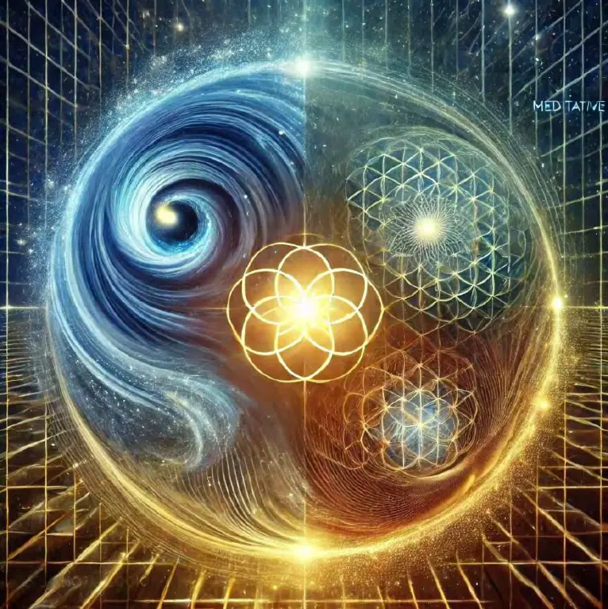

——基于SIO主客互动哲学的深度解构与再思
引言：我们要去认识世界
许多人从孩童时代起就耳濡目染地接受了这样一个理念：仿佛我们存在于一个既定的、客观的外部现实之中，而所有人的求知与成长，都理应朝向“认识这个世界”这一远大目标迈进。无论是在家庭教育、学校课堂还是社会舆论场上，这种观念都被反复强化：世界似乎是一个既存的、可以通过观察、分析、研究来逐步揭示其规律和本质的实体。从我们睁开懵懂的双眼开始，父母和师长就告诉我们要努力学习科学知识、积累生活经验，待到长大之后，便能更好地“认识这个世界”、理解它的运行法则并加以利用。
在漫长的人类历史中，“认识世界”也确实看似扮演了最根本、最崇高的角色。哲学家们思考宇宙起源与万物之理，科学家们利用实验与推理洞悉自然规律，教育者们则传授知识、培育人才，为的是让更多人能更贴近“世界的真相”。从古希腊自然哲学家到现代诺贝尔奖获得者，从宗教经书中对神圣秩序的崇拜到当代基础教育对科学方法的推崇，都透露出这一恒久不变的信念：世界置于我们面前，我们必须去认识它；唯有“认识”越充分，我们的文明就能越进步、越昌盛。
然而，当我们开始深究这一命题本身，就会逐渐察觉到它并非如想象般稳固。这样的“天经地义”可能暗含着巨大的思维陷阱。对于许多哲学家和思想者而言，问题的关键在于：是否真有一个完全独立、与人无涉的客观世界，静静地等待被揭示？ 又或者说，人类所谓的“认识世界”，真的可以摆脱种种主观视角、社会文化背景与历史情境的制约，而达致对世界“客观且普适”的把握吗？这些疑问，一旦被提出来，就揭示出一个沉寂已久的文明疑团：我们会不会一直在追逐一个假设、乃至一个跨越千年的文明谎言——即认为“世界”是固定客观的，而人只是需被动地去理解与反映它？
更为深远的思考在于：即便世界确有某些客观规律可循，“认识世界”就真的是人类终极任务吗？ 如果我们更换一个角度去看——或许“世界”与“知识”都并非纯粹独立存在；反倒是主体（人）与客体（环境、对象）在持续互动的过程中，才不断“生成”了我们所认知的“世界”。如果是这样，那么人类不仅在对既有事物进行描述与分析，也同样在创造与塑造各种新的世界形态与意义。从这个视角出发，“认识世界”就并非是我们唯一或最终的使命，“创造世界”也许才是更深层次的主轴。
SIO（Subject-Interaction-Object）主客互动哲学便是这样一套思想体系：它告诉我们，世界并非早已摆在那里等待我们去识别和匹配，知识也不是对外部静态对象的镜面反映。相反，世界是一个在主体、客体以及二者互动过程里，时刻变化与涌现的动态整体。在这个哲学框架中，我们必须警惕用“客观世界—被动主体”这样二分式的思维习惯来定义自身与自然万物的关系；必须认识到，我们所赖以生存和思考的“世界”，更多是由人类与环境的往复影响所构建出来的。
为什么说“认识世界”可能是一种谎言？原因不仅在于它忽视了主客互动对世界与知识建构的核心作用，还在于它往往让人们误以为：
1. 所有创造行为都仅仅是对客观事实的“发现与组合”，从而大幅简化了文明创造力的深度和广度；
2. 人类文明似乎只能被动地服从并应用那些“既定规律”，而没有“主动设计与颠覆世界结构”的权利与意识。
其实，回溯人类文明各个阶段，我们可以发现相当多颠覆性的发明、概念或制度，往往不是在已知规律里“优化组合”就能得到的；相反，它们更依赖对世界的“重新定义”与对问题边界的“彻底重构”。从哥白尼日心说到爱因斯坦相对论，再到当代对社会制度的种种创新尝试，常常呈现的是超越“认识”层面的颠覆性“创造”。因此，将所有创新简化为“从客观世界中搜集既有元素并作形式逻辑的组合”，无疑是对创造力的一种低估或削弱。
同时，把世界想象成一个“客观规律”统领的巨大机械系统，也使我们倾向于被动服从：只要我们承认规律早已存在、不可改变，那我们就只能顺应或利用，而无法在更深层次上改写这些规律本身。回顾历史，许多社会制度或技术体系最初也被当作“自然规律”的映射，但后来却在革新者的视野与努力下被“再创”得面目全非。文明的真正活力在于，一旦我们抛开对“外在客观性”的盲从，就能发现自己其实拥有哪些对现实进行重塑的契机与潜能。
由此，SIO哲学对“认识世界”命题的批判便具有了双重深意：它既在认识论层面上揭示出人类如何生成知识；也在社会文化和历史实践层面，展现了“认识世界”这套叙事对人类文明可能造成的束缚。这里所说的“束缚”并不是完全否定已经取得的科学成就或文明成果，而是提醒我们：很多时候，我们以为自己在“认识世界”，其实潜移默化地失去了对世界构造、社会形态及自我价值的更广阔想象。
在这方面，文中格外指出的两大危害值得我们警醒：
1. 把人类文明的创造力简化为“发现元素＋组合优化”
我们往往被教育或灌输，“创新”就是不断累积更多客观要素，然后通过类比、演绎等方式加以重组，仿佛所有突破都只能停留在这个“拼装”层面。这看似合理，的确解释了不少技术发明和商品开发，却难以说明为什么会出现某些“范式大变动”，也无法涵盖人类深层次的灵感、超常规思维及对意义世界的重构。换句话说，机械化的“要素组合”模型会扼杀对未知可能的想象，以及对问题本身的根本重新定义，而后者正是社会与科学最具活力的源泉。
2. 使文明从主动走向“创造条件+被动服从客观规律”
一旦人们将外部世界视为一个已经设定好的框架，文明只能去“找方法”在这个框架里生存或发展；换言之，我们似乎只能提供客观规律“需要的条件”来运行那些既定法则，而不是质疑、改写或创造新的可能模式。长此以往，社会改革或技术进步都容易局限在对既有系统的改良与适配中，缺乏根本性的颠覆与重塑空间。如此一来，文明便更像是对“客观世界”的延伸或加固，而非一个能够自觉地、主动地、创造性地进行自我更新和设计的有机体。
本书（或本文）正是基于上述反思与批判而展开：首先，我们将系统考察“认识世界”这一观念在哲学与科学发展史中的缘起、演变与被巩固的过程；继而，结合社会实践的现实案例，来阐明其对文明的具体误导和影响。最后，我们会将视角转向SIO主客互动哲学以及它为我们提供的另一条道路——从传统“被动反映”转向真正的“主动创造”。在这条道路上，世界不再被视为由外至内的既存客体，而是一个可由主体与客体共同塑造、打破又重建的动态场域。人类也不仅仅是知识的搜集者或真理的追寻者，而被赋予更高的创造使命。这样的视角有助于我们更坦然地面对当代社会所面临的深层挑战（技术革命生态危机社会制度变迁等），更有助于我们解锁人类文明在未来多元与无限可能性上的发展潜能。
可以说，这篇文章（或者说这部研究）不只是要质疑或否定“认识世界”的传统观念，而是要帮助人们领会：一旦我们突破那道由认识论假设所构筑的隐形樊篱，就能看见另一个无限开放的“创造世界”的维度。正是在这个维度里，人类才能真正发挥深层灵感与想象力，去塑造、设计并共同编织一个远超当下认知边界的未来图景。
因此，本文所肩负的任务，既是对古老命题的重新翻检，也是对当下以及未来社会的更深宣言：世界或许并未预先定型，我们也绝不是只能沿着客观规律前行的被动者。或许，“认识世界”的呼声对于过去的时代起到过极大的启示和推动作用，但当我们正步入一个技术高速变迁、全球相互联结以及价值多元共生的时期，就必须反思这个命题的局限，勇于探寻更深、也更具革命性的创造之源。
希望这一引言，能为读者开启一扇新的思想之门，让我们一起在后续的探讨中进一步揭示和验证：文明的本质，并非只是对世界的认识与改造，更是对世界的反思与新生，对世界的重构与创新。
第一章“认识世界”的历史根源与思想基础
在探讨“认识世界”这一观念可能带来的危害与谎言之前，我们首先需要回溯它的思想渊源及历史演变过程。只有弄清楚“认识世界”是如何产生、被接受并不断巩固流传的，才能更好地理解它为何能在数千年的文明进程中占据主流地位，成为被人们普遍奉为圭臬的“常识”。这不仅涉及到哲学发展的演变轨迹，也牵涉到宗教、科学、社会制度及文化心理等多重因素。下文将从四个重要历史阶段加以阐述，力图呈现“认识世界”观念的形成与强化之路。
1.1 早期朴素实在论与自然崇拜
在人类文明的早期阶段，生产力极度低下，社会形态十分原始，人类对自然现象普遍抱持敬畏与畏惧之心。狂风暴雨、洪水地震、日月星辰的运行，都带有神秘而不可测的意味。与这些雄伟壮阔却又变幻莫测的自然力量相比，个体的人类渺小而脆弱，生存常常面临难以抵挡的风险与灾难。
在这种环境中，往往出现了两大关键思想特征，也为后世“认识世界”观念的早期雏形奠定基础：
1. 自然崇拜与神秘主义
很多氏族或部落将雷电、暴风、山岳、河流等自然现象视作神圣存在，并通过各种祭祀、图腾、巫术来祈愿与沟通，希望获得自然的庇护。这其中隐含了一种对客观世界的“他者化”或“神格化”：自然被认为拥有自身的意志或法则，人类只能叩拜或试图讨好。无论是西方早期的泛神信仰，还是中国远古对祖先与天地的祭祀行为，都折射出类似的观念。
在此基础上，人与世界并未完全对立，但也无法将自然真正改造或掌控。人们只得遵从或被动适应自然秩序。“认识世界”在此时更多意味着尝试理解天地万物的“脾性”和“禁忌”，以求在与自然的交互中找到生存之道。
2. 朴素实在论：世界客观独立地存在
虽然上述自然崇拜带有主观幻想与神秘色彩，但它也隐含着最简单、直观的实在论思想：世界确实在那里，不以人的意志为转移。 人类无法随心所欲地改变山河大地或星辰运转，对它们的态度只能是“发现”“敬畏”“顺从”。像中国先秦的“天人合一”学说，就体现出先民们相信天地之“大”，人之“渺小”，唯有参悟“天道”，才能与自然保持和谐共生。西方的“万物有灵”观念也意味着世界有其内在的生命力或灵性，任何尝试违背或挑战自然，都有可能招致惩罚。
在这样的认识框架里，“认识世界”似乎是人类求生存的最直接需求：懂得季节交替和动植物特性才可发展农业与狩猎；了解地形地貌方能择地而居。此时的“认识世界”带有显著的实用目的，一方面满足人类对安全和稳定的渴望，另一方面也为后来更系统的哲学与科学思维埋下了种子。
朴素实在论的合理性
考虑到当时的生产与认知条件，无论在东方还是西方，“世界客观存在、需要被认识和顺应”的朴素实在论都显示了其合理性与现实功用：
指导生存
：帮助人们采用正确的方法种植、捕猎、聚落建设；
提供社会凝聚力
：自然崇拜或神明信仰能使部落或族群形成统一仪式与价值感；
激发“原初的”求知欲
：人类借此不断提问天地之理，也为后世的系统化思考打下基础。
总之，早期朴素实在论深深植根于人类对自然威力的敬畏心理，也为“认识世界”奠定了前提：即世界在主体之外客观地、不可违抗地存在。人类对其只能先认识后顺从，难以做到更深层的形塑或创造。这个观念在后续历史阶段虽然不断演变升级，但始终在潜意识里影响着后来文明对“世界”的理解与对待方式。
1.2 中世纪神学：上帝之下的世界秩序
随着社会组织形态的复杂化和宗教体系的兴起，“认识世界”在中世纪的宗教氛围下被赋予了新的精神内涵和道德准则。尤其是在西方的基督教世界以及东方的不同宗教体系中，出现了更为系统化、教条化的“神圣秩序”理论。
1. “神创世界”的信念
基督教神学强调，上帝乃万物的创造者，人类乃“神之造物”，世界则依照神的意志和计划而存在。类似地，在伊斯兰教、犹太教等一神教中也普遍存在“造物主”的核心概念。这种观念意味着：
世界并非自身即存，而是“被创造”或“被设定”的；
神所设定的世界内含一套终极法则或目的，人类对其的理解程度取决于对神启示的领悟与服从。
由此，“认识世界”带上了强烈的宗教意味：它不仅是对外在客观环境的把握，也与对“神意”的探求紧密相连。人们借由研读经文、神学典籍，以及对自然景象的默想，以期更接近“上帝之真理”。
2. 东方宗教哲学的并行发展
在东方文明中，佛教、道教等宗教哲学同样深刻影响了人们对世界本质的看法。虽然与基督教式的“神创论”不完全相同，但其核心也包含一套高于世俗的精神或天道观念。如道教中的“道生一，一生二，二生三，三生万物”，以及对“无为”“天道”之崇尚，都使得“世界”被视为一个具备先天规律的整体。人类若想“认识”它，就得顺应并参悟这些深邃的法则。
3. 神学时期对“认识世界”的伦理与禁锢
无论是西方的中世纪神学，还是东方受宗教教化的社会体系，都把“认识世界”放在一个神圣或神秘的背景之下：
世界由神（或天）所主宰
，人若想获得对世界更精确的认识，就必须恪守宗教准则，遵从上帝、天道或“天命”；
若某种认识行为被宗教机构视为异端或僭越，就会受到严厉压制或迫害。历史上，不少对自然现象进行实证研究或对教义提出质疑的学者都曾因触犯宗教教条而遭遇审判。
这样的背景下，“认识世界”仍然被视作人类崇高追求之一，但与宗教意义和教义诠释紧密相连，而不是为“认识”本身而认识。这种情况虽然在一定程度上为中世纪科学的形成提供了初步的理论框架（如对自然秩序的信念），但也在同时严格限定了人们对世界的想象力和研究范围。
4. 宗教背景强化“世界客观性”
值得注意的是，在宗教色彩下所建构的世界秩序，尽管有神学解读的维度，但仍然默认“世界”在神力或天道之下是客观存在且稳定的。人类的角色是遵从此秩序，通过勤勉、祈祷或逻辑思辨来逐渐“发掘”或“诠释”它。神学使得这一过程蒙上一层神圣光环，从而被视为理所当然且正当。
这使“认识世界”进一步获得宗教合法性——它不仅是一种世俗技术需求，也是一种带有救赎或修行意味的精神追求。就此而言，中世纪神学在为“认识世界”提供神圣化背景的同时，也维持着对主体能动性的压制或限制，使人们更倾向于“被动地追随神的设计”，而非大刀阔斧地改造世界。
1.3 近代启蒙与理性主义：科学理性自我确证
进入近代，随着文艺复兴与启蒙运动的开展，欧洲社会对人类理性的追求达到新高度，神学权威受到前所未有的冲击。此时，“认识世界”开始脱离对神圣的绝对依赖，转而走向对人类理性和科学思维的自信与崇尚。
1. 文艺复兴与对人的关怀
文艺复兴时期的思想文化浪潮呼唤“人”与“人性”在社会与精神生活中的中心地位。不少思想家反思中世纪对“神”的过度推崇，转而强调人的尊严、欲望、创造力等世俗面向。虽然这与后来的科学理性化浪潮并不完全相同，但它奠定了人文主义基调：人本身就拥有一定的主体地位，可以主动地探求世界真理或美学体验，而不必一味地仰赖宗教诠释。
2. 理性主义与启蒙思想
到了笛卡尔所处的时代，“理性”成为最重要的哲学关键词。笛卡尔提出的“我思故我在”，标志着近代哲学从神本到人本、从天国到理性内在的巨大转变。他所主张的“主体—客体”二分结构，令人们开始相信：
主体（我思）有能力进行怀疑、推理、分析；
客体（外部世界）独立存在，但需要通过主体的理智和感官才能被正确认识。
虽然笛卡尔的哲学仍在一定程度上保留了神学色彩（如他对上帝不欺骗人的信念），但无疑将对“认识世界”的着眼点从宗教解释转向了理性层面的自我确证。
3. 康德的认识论贡献
康德的批判哲学则进一步完善了这个框架：他认为人类拥有某些先天的感性形式（如时间与空间）和理性范畴（如因果性、实在性），任何对外部世界的认识都离不开这些先天条件的“塑形”。这意味着人类认识到的“现象界”必然打上主体思维结构的烙印，“物自体”则可能超出人类认知能力的范围。
尽管如此，康德依旧承认：外部世界具有某种客观真实性。人们可以“逐步逼近”或合理地解释这个现象界。换言之，“认识世界”被重新定义为主体秉持先天认知条件，对外部物质进行逻辑与经验结合下的探究。在这一阶段，“认识世界”逐渐摆脱了宗教神学的束缚，转而变成以理性和经验为根基的独立追求。
4. 牛顿与科学革命的加持
在启蒙时代，牛顿所创立的经典力学体系，为人类提供了一个足以令人震撼的“确定性宇宙图景”：万有引力、三大运动定律等核心原理，似乎让天空与大地都呈现可被数学规律精准描述、预测和运算的模式。科学对现实的解释力与控制力陡然提升，极大增强了人们“认识世界”的信心。随着时间推移，电磁学、化学、生物学都在类似的“实证—演绎”路线上取得进展，“世界客观可知”的观念愈发稳固。
由此，近代启蒙与理性主义确立了一个新的时代范式：人类不再只仰望神权或屈从“上帝预设”，而是依靠理性和科学方法去剖析自然、理解世界。“认识世界”成了正统的“知识进步”路径，成为摆脱中世纪蒙昧和宗教束缚的“伟大事业”。
1.4 现代科学实证与技术乐观
20世纪以来，科学研究在更深与更广的层面上取得了巨大突破：从宏观宇宙到微观量子，从生物遗传到信息论与计算机科学，人类对自然与社会的观察和干预手段显著提升，催生了“技术乐观主义”在全球范围内的扩散。
1. 实证主义浪潮
实证主义（Positivism）主张一切真理必须建立在可检验的经验、实验和逻辑推理上，否认超验和形而上学的意义。这种立场与“认识世界”的观念高度契合：世界被看作一部客观、可测的“机器”，科研工作者只需通过正确的方法和工具，就能越来越准确地拼凑出世界运作的全貌。
这一时期，物理学家、化学家、生物学家等在各自领域取得了丰硕成果，例如量子力学、放射性元素发现、进化论等。科学界频频突破被视为对“世界客观可知”信念的最有力验证。
2. 工程与技术的爆发式发展
随着19—20世纪几次工业革命，尤其是电力和信息技术革命的到来，人们开始深切地感受到科技在改变生活方式、社会结构上的巨大威力。航天、核能、计算机、互联网的问世与普及，无不展示人类依靠对自然法则的“认识”与“应用”所能取得的前所未有的成就。也正因此，“认识世界”的重要性与迫切性进一步提升，变成“拥抱科学、通往现代化”的同义语。
3. 实证与应用的良性循环
科学与技术之间形成了互相促进的循环：实证研究提供新的理论和发现，为工程技术奠定原理基础；技术反过来又为科学探索创造更先进的实验手段和观测工具。这样一来，越来越多的领域都可用“认识世界”的方式获得成功案例：例如用基因工程改良作物，用航天技术探索宇宙，用核物理研发核能。
这种不断显现的技术成功，大大助长了科学主义和技术乐观主义，使得人们普遍相信：只要坚持科学方法，就能打破对世界认知的任何极限。 世界因此被看作一个等待人类“揭示”和“利用”的客观资源库。
4. “认识世界”与现代社会的方方面面
在这个阶段，“认识世界”早已渗透进教育、文化、经济、政治等各个领域：
教育
：强调对自然科学原理和实验技能的掌握，鼓励学生用客观理性研究事物；
社会政策
：基于数据与科学证据的政策制定逐渐成为主流，如公共卫生、环境保护等领域都强调“科学认识”与“实证决策”；
经济与工业
：研发创新成为竞争力的核心，企业纷纷依托科研成果进行产业升级或市场拓展；
文化与舆论
：媒体、科普、大众思维普遍把“科学认知”视为权威和进步的象征。
综上，现代科学实证与技术乐观的强烈势头让“认识世界”获得了前所未有的动能与影响力。对于绝大多数人而言，“世界”就是一个客观且可以被掌控、解析和利用的现实场域，科学提供的认知模式和技术工具可以帮助我们走向“真理”或不断逼近真理。这样一种坚定信念，很自然地延伸出主流的社会信条：继续深入研究，继续扩大全球化的科技应用，终将使我们解决更多问题、征服更多难题。
小结：从早期到当代，“认识世界”的不断强化
从上古的自然崇拜与朴素实在论，到中世纪的神学模式，再到近现代的理性主义和科学实证主义，“认识世界”在历史长河中完成了从神秘到理性、从定性到定量、从局限到普及的多重转型。它的地位也从早期的人类求生所需或宗教神圣命令，逐渐演变为启蒙运动的理性逻辑与现代社会的科技支柱，直至今天成为一条笼罩于公共观念的“全维真理”。
然而，正是这种从“原始崇拜”到“科学至上”的漫长进程，才让“认识世界”在我们心目中看似如此自洽与权威。人们往往忽视了它在本体论和认识论层面可能存在的偏颇：当我们将“世界”想象为先在的、独立于主体并且可以被完整还原的客观对象时，便不可避免地忽略了主客体之间的互动——也即世界并非单向地给我们提供规律，而是在我们的观测、实践、语言、文化等多维度塑造中才得以“成形”。
这个自洽却未必全真的宏大叙事，恰恰让“认识世界”在很多时候变成了遮蔽人类创造力的文明神话。正如后文将要详述的那样，这一观念在为我们带来巨大技术红利与知识积累的同时，也可能阻碍更深层次的突破与社会变革。要想打破这种局限并激发人类更新、更广义的潜能，我们必须从根本上重新审视“认识世界”的逻辑前提。只有了解其历史根源，我们才能明白它为何被广泛接受，以及如何在当代背景下展现出更隐蔽但深远的影响力。
第二章“认识世界”的两大危害
尽管“认识世界”这一主流观念经历了漫长历史的锤炼，在许多方面为人类文明的发展做出了重大贡献，但若深入剖析其内涵及逻辑，就会发现它所蕴含的两大“危害”——或者更准确地说，“深层误导”——对人类的创造力、社会制度乃至文明形态都可能产生潜在的束缚作用。这些影响往往在现代社会中以更隐蔽的方式显现，需要我们保持高度警觉并寻求相应的矫正与突破。
2.1 危害一：把人类文明的创造力简化为“发现元素＋组合优化”
“认识世界”在许多语境下会暗示着一种看似合理的创新公式：只要我们辛苦探究外部的客观事实和规律，就能够“发现”更多“自然赋予”的要素——不管是物质材料、能量结构、信息资源、还是抽象的数学概念、社会现象等——接着再用逻辑或工程方法对这些现成要素进行排列组合或优化整合，就能达成新的发明或进步。表面看来，这种思路确实在一定范围内能解释大量实际成果：
材料领域
：将不同金属或非金属元素进行配比，制造出强度更高、耐腐蚀性更好的合金；
算法设计
：在已知的一套数学工具或编程思路上改进局部模块或数据结构，便能取得性能或效率的大幅提升；
学科交叉
：组合已有理论（如物理学与化学生物学），衍生出新的研究领域（如量子化学、分子生物物理学），在传统交汇处找到更多创新点。
这些例子容易让人们相信：创新就是从“客观世界”搜集和拆解已有要素，再利用演绎、归纳、类比、形式逻辑等方法来机械式地组合与优化。 然而，这种看似行之有效的范式，却往往遮蔽了更深层次的创造性内核——对世界观、问题边界及意义体系的根本重构。
1. 忽视“问题本身的重构”
很多革命性突破往往起源于对问题本质的重新审视。例如：
爱因斯坦的相对论
，并不是在经典力学原理基础上“小修小补”，而是彻底改变了空间、时间、运动的定义与关系；
达尔文的进化论
，也不仅是为生物学堆砌更多物种信息，而是从根本上改写了人类对“物种起源”和“适应环境”的理解框架；
现代互联网
的诞生，绝非只是对通讯技术的简单拼装，而是对信息传递、社会交互模式、全球协作方式的全新构想。
这些重大创造之所以能够问世，关键在于对既有的认知范畴或研究范式做了深度颠覆，而非在旧思路内“微调”“组合”要素就能实现。这说明，真正的原创常常伴随着“对问题定义的跳出与改写”，从而产生涌现式的新思维与新应用。
2. 无法涵盖对世界意义与价值的再塑造
人类的创造力不仅体现在科学或工程技术上，还体现于对意义与价值的塑造，以及对社会、文化、艺术等领域的革命性变革。例如：
文艺复兴时期
的艺术家，并不只是在旧题材里寻找新的绘画技巧，而是在精神与文化上对“人文主义”“个体尊严”等概念进行全新阐释，推动社会思想走出中世纪桎梏；
现代公益或社会企业模式
的出现，背后往往蕴含着对商业经济逻辑与社会责任感的再定义，把“利润最大化”视角切换成“公益与可持续”优先，将经济视为服务全人类福祉的创造性工具。
这些案例反映出创造力并非仅仅来自要素组合，也在于根本性地改写了我们看待世界、衡量价值与意义的方式。 如果只把创新视为对客观元素的收集与拼装，就难以解释为什么完全不同的文化或意识形态会带来如此截然迥异的创造成果。
3. 造成教育与创新政策的局限
当“认识世界”被认为是核心信条，各种教育或创新政策就可能过度强调对知识要素的罗列与组合训练：如要求学生熟练掌握更多数学定理、程序算法或工程技能，却很少鼓励他们质疑已有范畴、提出非传统选题或跨越学科领域的颠覆性思考。结果往往是：
学生
只懂得应用既定方法解题，缺乏对问题前提进行挑战的意识；
研究机构
更倾向于稳妥的“延续性研究”，而忽视有潜在高风险但也可能带来范式转换的项目；
企业创新
集中在局部技术改良或市场优化，而不是大胆设想全新商业模式或社会合作形态。
从长远看，对组合式创新的偏好会扼杀更深层的探索精神，降低文明自我变革的可能性，使社会发展陷入对旧世界加以修修补补的“维护模式”。
4. 跳脱“拼装思路”才能激发真正原创
要打破这一误区，需要人们在思维层面上意识到：创造不是被动地对客观元素加以拼接，而是一种能对根本假设、问题定义、意义框架进行重构的综合性活动。发明家、思想家、艺术家都在某种程度上承担着“重新书写世界”的角色，而不是扮演机械式的“材料编排者”。倘若我们无法辨清这一点，便会继续迷失于对“认知碎片”的收集与再利用当中，无法真正迎来超常规的灵感、洞见与转变。
2.2 危害二：使文明由主动走向被动服从
当“认识世界”成为一种绝对正统，我们往往会不自觉地接受这样一个潜台词：世界的规律早已客观存在并经得起检验，文明的进步就是通过认识和服从这些规律来获得发展。在这个框架下，主体现实上被摆在一个极为被动的位置：只能“利用”或“顺应”世界，而缺乏主动去“发明新世界”的合法性或勇气。这种被动性的影响深远，主要体现于以下几点。
1. 被动适应世界：只谈遵守与利用，不谈重塑
“认识世界”的观念让人们相信：只要努力研究客观规律，就能更好地规划出高效或符合自然法则的行为。学校教材、科普文献、公共宣传都常用“自然规律不可违”的观点来告诫人们要学会敬畏和顺应。然而，这种态度容易导致：
创新仅限于微调或工具性改进
：一旦把自然规律视为不可改变的前提条件，人们只能在固有边界内局部优化，很少考虑从根基上“重写”任何模式；
忽视建立新范式的可能
：历史上，能量守恒、热力学定律等确实被视为硬性自然规律，但也有很多被奉为“定律”的东西最终被更新或被新的理论超越。例如，经典力学对光速不变的忽略一度阻碍了对相对论的探索。倘若一味相信旧认知的绝对正确，就会冻结学术思维与探究热情。
2. 社会制度与价值观的被动性：不敢变革，只敢调适
这种思维惯性不仅体现在自然科学，还蔓延到社会制度和文化领域。对许多社会学、政治学或经济学理论的默认态度是：“它们反映了客观的社会规律或市场规律，只要我们正确认识并遵守，就能繁荣发展。”
经济学
：很多时候将市场供需、价值交换、竞争策略等视为“人性”或“市场运作”的客观规律，从而排斥对经济模式进行结构性调整（如大规模公共投入、合作经济、共享经济）或制度创新的可行性；
政治学
：有人把国家治理、权力分配等模式称作“历史发展的必然产物”，鼓励民众遵从现行体制，而不是去大胆实验不同的民主制度或社会组织形态；
教育与文化
：系统中固化的考试制度、职业准则、文化价值观都被当作某种“客观、科学、最优”的设计，而质疑、批判或改写的声音经常遭遇冷淡或打压。
在这种氛围中，原本应当承认的“社会—政治—经济系统也是人类共同创造的结构”被涂上“不可撼动”的色彩，使得主体无法轻易突破已有规则，陷入对“现有客观状况”的被动适应。
3. 文明创造被降格为“创造条件+规律执行”
当“认识世界”成为绝对化命题后，整个人类文明的实践路径就被简化成：先认识世界规律，再为其运行提供合适条件或加以利用。在实际操作中表现为：
城市规划
：遵循某些被视为“客观”的城市发展规律或交通理论，在原有地形、资源条件下补充路网、加装基础设施、完善公共服务，而不是系统性地考虑“城市如何作为一个新生态系统被创造出来”；
工业生产
：一味强调对自然资源的高效开发或利用，却较少从根本质疑“不可持续的生产方式”或“过度消费主义”的问题结构；
社会政策
：在已有经济与社会结构下，试图优化劳动力供给或福利分配，但很少讨论“我们要创造什么样的未来社会模式”。
这种对“已有规律或条件”的顺从，可能带来局部提升效率，但也常导致对大规模颠覆或多元化选择的保留甚至排斥。因为整个社会的思维坐标都被锁定在对外部世界的认识与利用中，“创造新的世界形态”这类超前命题也就难以受到足够的重视与探索。
4. 对未来想象力和多元路径的限制
现实往往不止一种可能，历史也常常在意想不到的“歧路”里找到新出路。如果一直将“认识世界”视为首要目标，社会的整体心态就会倾向于保守，觉得“所有事情都已经在自然或客观规律里写明白了”，只要解读好就行。这样一来，人们对未来的想象力——对社会制度、价值体系、生产方式乃至人与自然关系的根本重塑——都会被限制于常规路径之内。譬如：
我们会认为“市场竞争”是唯一可行模式，却不愿尝试大范围的合作性经济形态；
我们会默认“现有能源体系”是必然的，忽视对先进核聚变、氢能社会、碳循环技术等突破性方案投入更多力气；
我们会把传统的考试教育制度当成“合理机制”，缺乏为孩子量身定制、包容多元发展的创新教育实践。
在这种“被动服从”的思维定势下，文明内部也失去了检讨自身、摆脱既有体系桎梏并跨越式发展的动能。许多大胆的变革或者来自于边缘组织或个人的异想天开，或者迟迟得不到主流支持与制度性铺垫，难以产生真正的“范式迁移”。
小结：从“认识世界”到“创造世界”之必要性
总而言之，“认识世界”在提供科学启蒙与技术积累之余，也潜藏着两大威胁：
1. 把创造简化为“元素发现＋组合优化”
：限制对全新范畴和范式的想象与实践；
2. 让文明走向对既有客观规律的被动服从
：削弱对结构性、根本性变革的主动性与自觉性。
这两点影响表面上不易察觉，因为它们与我们从小所受的教育或主流话语深度吻合，人们往往将其当作“常识”来接受。但透过对历史与当代无数创新案例的观察，我们可以明确地看到：真正意义上的创造与社会变革，绝不仅仅是对既有要素的机械组合，也绝非对既定系统的被动屈从。 它需要超越“认识世界”的狭义概念，迈向更主动的、对世界进行再设计、重构、发明与探索的开放思维。
正是基于这种认识，我们才能开始反思“认识世界”这一主流叙事之局限，并寻求新的哲学与实践框架，为文明开辟更宽广的进化空间。而这也为接下来对SIO（主客互动）创造哲学的探讨做好了铺垫：如果承认世界与知识都在“主客互动”中被塑造，那么人类就不再只能扮演客观规律的忠实记录员或利用者，而能成为世界观与社会范式的真正塑造者和创造者。
第三章“认识世界”观念为何能够长久占据文明主流
前文详细剖析了“认识世界”所带来的两大危害：它能将创造力简化为“要素组合”，并使人类文明的主动能动性被削弱，走向“对客观规律的被动服从”。很多人也许会产生疑问：如果这一观念真的具有如此多的局限甚至误导性，为什么它却能在漫长的历史中始终盘踞主流地位，并在当代依旧稳固地影响着社会各个层面？实际上，“认识世界”之所以能够长久存在并广泛为人们所接受，绝非偶然，而是在多个层面同时得到了强力的背书与强化。以下将从直观经验、历史与宗教权威、科学与技术成就的佐证、以及教育与主流话语的推广四个角度做更深入的探讨，并结合具体案例与理论来佐证其根深蒂固的原因。
3.1 直观与经验的推力
（1）直觉与感官经验的巨大影响力
几乎所有人自出生起，就会透过感官接收外部世界的信息：我们看到日月星辰的运转、感受到温度和气候的变化、体验到大自然四季轮替的规律。这些看似自然而又客观的现象构成了日常生活的最初背景，塑造了我们对“外部世界”的原初认识。正因为如此，孩子刚学会说话，就能指着天上的太阳或远处的山峰说：“那就是世界。”这种“它就在那里”的直觉非常强烈，而且“用之则灵”，使我们轻易相信世界拥有客观的、独立于人的“实在”面向。
案例：一个孩子初次认识火焰时，被父母告诫“火会烫伤”。他试着用手接近火苗，立刻感到灼痛，得出“火真的会烫伤人”这一经验结论，从而相信这是大自然的客观现象。年幼的孩子并不会去思考“火”可能是人类命名和定义的一种过程，也不会考虑到人为设计的环境及互动所造成的差异，只会直觉地将之归结为“这就是世界的真相”。理论支撑：心理学研究指出，人类对外部环境的最初感知往往带有“直接实在论”（Direct Realism）的倾向，即认为所见即所“实”。成年后，很多人仍在情感和认知深处保留这种“眼见为实”的思维模式，唯独在专业科学探究中才会被要求进行更抽象、更严格的分析。
（2）日常经验的成功例证
不止是感官直觉，日常生活中很多事情确实能通过“认识世界的规律”而取得成功，进一步强化了人们对“世界客观性+被动认识”的信赖：
农业：农民通过认识季节轮换、温度湿度变化、土壤特性等，学会合适的耕作与灌溉时机，因而提高了产量。这种认识与应用的成功让人觉得“外部世界确有规律，只要掌握就能事半功倍”。
商业：商人通过对市场供需规律、消费者偏好以及价格波动的研究，往往能做出更有效的投资和销售策略。
机械与建筑：匠人或工程师学习力学原理和材料特性，就能造出更稳固的房屋或桥梁。
所有这些经验教训都在潜移默化中告诉我们：外部世界具有可认识、可利用的客观律动，所谓“认识世界”不是空口白话，而是能带来实际好处的可行之道。如此一来，不仅个人的生活、社会的经济生产，也在为“客观世界—被动认识”的观念做着“现成佐证”。
（3）经验与主客互动的忽视
但需要指出的是，以上成功例证往往忽视了主客体之间的交互本质：很多规律与成果之所以能够产生，是因为人类在其中扮演了“再设计”“再选择”乃至“再定义”的角色。农业的耕作方式并不仅仅是“认识季节”，而是人类主动培养和改良作物、改变灌溉工具或农田结构；商人并不仅仅是“认识”市场，还会通过营销、品牌塑造、跨界合作等方式积极“塑造”市场。当人们只看到“符合客观规律而成功”的一面，却没有意识到背后种种人为的互动创造，就很容易把一切都简单地归结为“认识世界就是有用”，进而在思想上落入“被动认知”是唯一路径的陷阱。
3.2 历史与宗教权威的背书
从更宏观的角度来看，人类社会并非由个人的日常经验孤立构成，而是被层层结构化的历史、宗教、政治权威所塑造。这些权威形式往往赋予“认识世界”更多的神圣性与正当性，使得此观念在无数世代的文明演变中被巩固和强化。
（1）宗教教义：对“神之世界”的敬畏
早期文明：在中东或埃及的古代社会中，就出现了通过祭祀和占卜来“认识神谕”的宗教实践，人们相信世界是由神所主宰，所以必须遵循神所设定的规则和旨意才能在天地间存活。
中世纪的基督教：教会宣称《圣经》里的“上帝创造世界”就是最根本的真理，任何追求真理的行为都被视作“认识并服从上帝之意”。他们会组织大规模的神学讨论，用以确定哪些自然现象或社会法则可以被纳入“神意”的范畴。对世界的任何进一步认识，也都能被贴上“对神意的领悟”这层正当性。
伊斯兰教、犹太教、东方宗教：各具不同的教义与社会背景，但大多也存在类似倾向：世界作为“神圣秩序”的载体，唯有人类“认识”并“臣服”于此秩序，才算真正合乎天道或戒律。
在神权政治或宗教势力强大的时代，若有人质疑“世界”是否真的那么客观固定，或是提出“我们可以重塑世界秩序”，便可能被视为对神圣法则的冒犯或异端。这种强力威慑使得“认识世界”的观念得到频繁祭用与巩固——它与“顺服天命”或“遵循神道”在语言与逻辑上一拍即合。
（2）统治者与社会权威的运用
王权与帝制：无论是中国的封建王朝还是欧洲的绝对君主制，统治者常常以“天命所归”或“神选之子”的名义来彰显自身合法性，并强调世界具有某些“终极秩序”，唯有王权（帝权）才代表对该秩序的正确认知与执行。
官僚机构与官学：在漫长的历史中，官僚机构或主流学术体系往往负责对知识进行编撰、传播或评判，他们将统一规范的体系（如儒家经典或经院哲学）奉为准则，将“认识世界”视为在既有框架下的阐释与精进，而非对秩序本身的大刀阔斧改写。
这些权威体系极其需要“终极秩序”或“神圣法则”来支撑自身地位，“认识世界”在这里和“维持秩序”之间形成互动：若主张世界可以被人类重新构造或创造，便很可能动摇权威的根基。故而，传统社会里那些真正挑战世界本体或社会规则的人，经常被冠以“叛逆”或“异端”的罪名遭到打压。这种倾向也塑造了人类长久的集体意识，让大家更多地倾向于“认识并服从”现有世界，而非“创造新世界”。
3.3 科学与技术成就的佐证
随着近现代科学革命的崛起，“认识世界”取得了超越宗教与封建传统社会的更高层次支撑——科学实证与技术成果。这是此观念在当代极具影响力的关键根基，也往往被人们视为最直接、最有力的证据。
（1）工业革命的成功与神话
18—19世纪的工业革命，使欧洲社会在生产力方面取得爆炸式发展；蒸汽机、火车、机械化工厂等层出不穷。人们追溯其成因时发现，背后离不开物理学定律、机械原理、冶金术等科学知识的应用。这条“认识—应用—爆发增长”的因果链让大众普遍相信：只要认真研究自然规律，就能创造繁荣。这也进一步强化了对外部世界“客观存在+可掌握”的认同。
（2）现代科学的“硬核”突破
理论物理：从牛顿力学到爱因斯坦相对论，再到量子力学，科学家不断以数学和实验去证明自然法则的存在与普适性。这些重大理论突破往往解决了许多过去被视为无解的难题，或成功预言了如引力波、粒子衰变等现象的存在。
生命科学：进化论、遗传学、分子生物学等使人们对生命起源、物种变异、生物化学机制有了空前深刻的理解，带动了疫苗、抗生素、基因工程等应用技术，为人类战胜多种疾病提供了直接路径。
信息与通信：电子计算机与数字通信的出现，进一步让人们相信只要掌握信息的传递规律，就能在海量数据处理中持续逼近对世界的精准描述。
这些科学突破纷纷在社会层面催生出看得见、摸得着的“奇迹”——从巨大的航天火箭到随身手机、从全球卫星网络到人工智能系统……使人类切身体会到了“掌握世界规律”与“现实改变”之间的因果关系。
（3）从实证到“认识世界”观念的再度强化
每当科学技术取得新的里程碑，人们总会将其解读为“对客观世界更深入的发现”。媒体、科普著作、大众教育都大力宣传这种“不断揭示世界奥秘”的叙事，使“认识世界”的逻辑愈发固若金汤。与此同时，科学主义或技术乐观主义的声音也水涨船高：只要有正确的方法和足够的投入，我们就能认识并改造世界的所有面向，包括气候系统、宇宙边界乃至人类自身的基因结构——“世界”仿佛无所遁形，完全暴露在人的探照灯之下。
于是，任何质疑“世界独立客观性”或强调“主客体相互塑造”的学说，往往被指责过于哲学化、空想化或反科学。正是因为科学与技术的巨大威力频频展现在我们面前，“认识世界”才得以在现代社会获得比历史上任何阶段都更稳固的舆论根基。
3.4 教育与主流话语的强化
如果说日常经验、宗教权威和科学技术成就是推动“认识世界”长期占据主流的内部动力，那么教育与主流话语就是把这种观念深度植入大众心智的重要“制度与文化载体”。在现代社会，这种强化机制常常表现为四方面：
（1）学校教育
知识体系的结构：从幼儿园到大学，绝大部分课程都围绕对“客观知识”的传授而设计，如物理、化学、生物、地理、历史等，它们通常被描述为对客观事实与规律的搜集、归纳与演绎。
教学理念：很多教师强调“事实性知识”的重要性，要求学生通过阅读和背诵掌握大量客观信息——地球构造、元素周期表、动植物分类、经济学原理等等。
评价与测验：考试常常采用标准答案与量化评分的方式，让学生更倾向于从书本或标准模型出发去“寻找正确答案”。这在客观上巩固了“世界就是有固定真相等我们来发现”的想法。
（2）大众媒体
新闻与科普报道：媒体会以“最新发现”“真相揭秘”等标题吸引公众关注，突出某个科学研究或考古发掘，潜移默化地告诉观众：又有一片世界的“客观规律”被人类发现了。
流行文化：电影、电视剧、纪录片等常常以“客观世界”作为故事背景板，人物需要去应对、适应或改变外部环境，却很少强调对环境本身进行反思性或创造性改造。
网络与自媒体：信息爆炸时代，人们对知识或事件的快餐化消费更甚，“世界已在那儿”的暗示更显强烈，质疑或探索“世界本质并非固定”的内容不容易赢得广泛传播。
（3）主流文化和价值导向
在现代社会，“实用主义”“效率至上”和“证明一切靠数据”的风潮盛行，许多企业或机构都有意识或无意识地将“外部世界”视为客观资源或挑战，“我们要认识并战胜它”的雄心深深吸引着大众追求。由此，“认识世界”观念在经济领域（商业竞争、生产管理、技术研发）和社会生活（消费观念、娱乐方式、个人职场规划）上被进一步固化。
（4）对反思与质疑的排斥
与上述三点相对应的是，对“认识世界”观念持保留或批判态度的人通常难以在主流话语平台获得充分表达空间。凡是涉及颠覆性或超常规想象（例如“世界并非外在客观”“规则是可被创造的，而非只能被利用”），往往被视为小众或不切实际。从而在公共领域形成了一种单向度的共识：世界是既在的、客观的、可被认识的；我们的任务就是想方设法认识并使用它。
小结：从多重维度的“集体塑造”到观念的深度内化
综上所述，“认识世界”能够在漫长岁月中始终居于主流，并非偶然，而是受到了来自日常直觉、经验成功、宗教与政治权威、科学技术成就、教育和主流话语等多重层面的长期推力与加持。从个体的感官经验，到社会制度与文化氛围，再到大众传媒与学术界的认知范式，都互为因果地塑造着一个自洽的宏大叙事：世界客观而真实，主体只是去发现它；一旦发现了世界规律，人类就能取得成功或得到救赎。
这种叙事之所以强大，除了满足社会管理或科学推进的需要之外，也迎合了人类在认知和心理层面上对于“确定性”的渴望——我们希望相信“世界稳固地在那里”，只要努力学习和探索，就能持续得到更多真实与好处。此时，要想指出“认识世界”的局限与潜在危害，往往就会触及到人们对“安全感”“可预期性”“社会秩序”的深层需求，因此容易被视为“不合时宜”或“离经叛道”。
然而，正如前两章所论证的那样，“认识世界”在给人类带来巨大收益时，也伴随着对创造力与主动性造成的桎梏。当我们试图超越既有规则、打开更深的创新空间、以及探索“世界是否可以被创造”这一全新边界时，就会发现自己被内外一致的教育与主流话语所制约。也正因此，理解其背后的支撑逻辑与塑造机制，对我们有朝一日能够突破这些束缚、走向更自觉的“创造世界”新范式，显得尤为关键。
在后续的讨论中，我们将转向一种替代性框架——SIO（主客互动）创造哲学，以及它对于打破“认识世界”单一叙事的潜能分析。唯有先看清这张迷思之网是如何层层织就、如何强固人心，我们才更可能在思想与行动上得以挣脱，从被动解析世界走向对世界主动重构的伟大飞跃。
第四章 SIO创造哲学：对“认识世界”谎言的全面解构
纵观前文，我们可以看到“认识世界”这一观念背后潜藏的若干局限性：它令创造力被误读或削弱，并把文明的发展引向对既有规律的被动服从。那么，是否已经有足够有力的理论或思维范式，能够对“认识世界”的基本假设进行根本性的反驳与替代？答案是肯定的。SIO（Subject-Interaction-Object）创造哲学正是这样一种颠覆性的新思路。它通过关注“主体—互动—客体”三要素的交织与建构过程，从根基上揭示世界与知识的真实运作模式，并为我们开启一条从被动“认识”转向主动“创造”的全新道路。以下内容将从六个层面做更加详尽的阐释，辅以哲学、科学以及日常生活的具体案例，加倍呈现SIO创造哲学如何对“认识世界”观念进行全方位解构。
4.1 世界的本质：在主客互动中被持续“创造”
4.1.1 主客体之间并非“一方已存，另一方去发现”
按照传统“认识世界”的说法，世界（客体）被设定为客观且独立先在，主体则被视为被动的“观察者”或“记录者”，两者近乎井水不犯河水。而SIO创造哲学则强调，世界与主体从一开始就处于不可分割的交互关系之中，彼此之间并没有一个完全先于互动的“纯粹存在”。
1. 世界并非“被发现”的客观实体
在SIO视角里，所谓“世界”更多是无数主客体相互作用后逐渐“显化”出来的结果。在人类尚未命名或尚未关注之前，任何事物都缺乏具体的功能属性或文化含义；正是在人类赋予它们概念、用途或情感投射的过程中，它们才逐渐显现为我们所见到的“客体”。
案例：玻璃最初只是自然界中熔化冷却后偶然形成的硅酸盐，没有什么特定意义。后来，人们发现它的通透、易塑性特征，并逐渐学习如何利用窑炉和工艺来大规模制备玻璃器皿、窗户、光学镜片，才形成了今天我们所说的“玻璃”概念。若失去主体对其特性的持续观察与塑造，玻璃就不会成为工业与生活不可或缺的材料。
理论阐释：海德格尔的“在世存在”（Dasein）哲学和符号学派的研究都曾指出，事物在成为“客体”之前往往只是混沌中等待被界定的“存在物”，只有当主体以语言、符号、使用方式进行标记，它才具备被区分与被谈论的意义。
2. 主体也并非先验的“纯粹自我”
与此同时，SIO创造哲学认为，主体（人）也不是一个既定且全能的“意识之源”。每个主体身处具体的历史文化环境、语言体系和身体条件之中，时刻受这些因素的影响和塑形。
案例：一个在游牧文化中长大的孩子与一个在高楼林立的都市长大的孩子，对于“土地”的看法、与土地的互动方式，就会显得大相径庭；同一片草原在前者眼中可能是安身立命的牧场，在后者眼中只是漫无边际、交通不便的荒原。由此可见，主体自身的“设定”也在不同环境里被重构。
理论阐释：当代语言学和社会学的研究强调，个体并非孤立存在；从婴儿时期开始，语言、社会规范、文化心理等便交织塑造了我们的偏好、思维路径和情感反应。主体从不只是一个“客观收集器”，而是被无数外部与内部因素所制约与演化。
4.1.2 互动（Interaction）：持续“创造世界”的关键场域
SIO哲学的独特之处在于，它将互动（Interaction）看作最关键的“发生场域”，而非仅是主体与客体之间的信息传递。
1. 互动塑造世界与主体
在每一次对话、每一次实践、每一次观察中，主体都将自身的经验、思维和情感注入到对客体的理解或使用中，从而使客体不断获得新的定义和意义；同时，主体也会在与客体的交互中被改变和重塑。
举例：艺术家与画布之间的关系，远不是“客观画布+观察者的眼睛”那么简单。艺术家边涂抹边揣摩，画布上的变化又会反过来激发他的灵感或引导他的审美倾向，最终的作品是一个不断协商、碰撞、凝聚出的“动态存在”。画布也因此成为带有艺术家独特风格与思想的“世界一部分”，不再是简简单单的白色布料。
2. “场域”与“生态系统”的概念
一些生态学和复杂系统科学的研究与SIO创造哲学不谋而合：一个生态系统并不只是动植物的叠加；物种之间、物种与环境之间的持续交互过程不断孕育或淘汰新的适应策略，造就生态的多样性与动态平衡。
案例：在珊瑚礁生态系统中，珊瑚、鱼类、海洋微生物等多方彼此依存、影响。任何一个群落的崛起或衰落，都会引起全局状态的改变。我们若把生态系统想成“主体”和“客体”各自独立存在，就无法理解珊瑚礁繁荣与海洋酸化之间的复杂关系；唯有承认这些不断发生的交互，才看得见生态真正的动态演化。
4.1.3 “没有一成不变的本质”：多元视角的并行存在
既然世界在主客体互动中才显现自身，SIO哲学便否定了世界存在某个“一成不变的客观本质”可供人类被动发掘。
文化差异视角：不同文化对同一事物往往有截然不同的命名和功能用法。水牛在东南亚传统农耕社会是主要生产力，在欧洲现代畜牧业模式里可能只是驯养对象或“异国动物”的象征。到底“什么是水牛”？取决于它与那片土地、那群农民的互动关系。
科学革命例证：在科学史上，几次重大范式转换（如从地心说到日心说、从牛顿力学到相对论）的出现都展现了同一物理现象在全新互动前提下得到完全不同的解释和构图。倘若世界本身拥有唯一的静态真相，不同范式为何会并行或替代？SIO哲学强调的正是：任何规律都依赖于一套主客互动范式的建立与维持；一旦主体在方法、仪器、认知框架上发生迭代，世界在我们眼中也将展露出新的面貌。
4.2 知识的本质：动态生成的结构，而非对外部的被动反映
4.2.1 传统认识论：知识是对外部事物的“准确描述”
在传统的“认识世界”图景里，人们普遍将“知识”视为对客观事物或规律的镜面反射；只要主体现实了精准的观察与推理过程，就能得到“客观世界”的真知。从某种意义上说，科学研究的目标被解读为“逼近客观真理”，人文社会学科也往往号称“发掘社会规律”或“揭示普遍的人性”。
然而，这一类观点忽视了两个事实：
1. 知识与语言、文化不可分。语言并不是无色透明的容器，而在命名、比喻、分类的过程中深刻塑造了我们对客体的认识。
2. 知识会随着历史与主观目的的改变而改变。很多曾被视为金科玉律的结论，随着研究范式或社会需求转变而被修正或舍弃。
4.2.2 SIO创造哲学：知识是“主客互动”的动态结构
在SIO创造哲学中，知识并非脱离具体情境、静静地躺在世界某处等待发现。相反，它是一种在主客交互中不断酝酿、生成、传播乃至消亡的“结构”或“图式”（Schema）。
1. 互动条件决定知识形态
同一自然现象在不同的主客互动条件下，可能催生出截然不同的知识形态。例如，雷电在古时候与巫术、天神等传说联系在一起，被视为神意或神威；在近代物理中，则成为放电现象的一种自然过程，被纳入电磁学范畴；在当代又延展成雷达技术、防雷系统设计等实际应用领域。
正是人类与电现象之间的实验手段、理论框架、语言解读等互动要素的改变，才导致对“雷电”的知识不断累加、演变。
2. 知识的功能属性：不是绝对客观映射，而是对世界的“操作说明”
SIO视角下的知识更接近一个能帮助人类处理事务、达成目标的“功能性结构”。它无需也难以达到完全客观的精确对应（因为世界本就处于流动中），而是对主客体在特定场域中互动的一种“可行描述”。
举例：我们学习烹饪时并非只想取得某种“对客观食材最精准的反映”，而是为了更好地利用食材组合出美味。大家对同种食材可能有千变万化的烹调技艺，这些技艺从不同角度构建了关于“如何烹调”的知识，且不存在所谓“唯一正确的食谱”。
3. 知识在历史和文化中继承与演化
科学史或思想史频繁出现的大规模知识更迭——如从托勒密地心说到哥白尼日心说、从拉瓦锡的化学革命到现代量子化学——都显示知识会“新陈代谢”。这些“代谢”并不能简单理解为“接近真理”，而更像是旧互动模式被新互动模式替代，新的实践工具、新的观测技术、新的思维框架赋予了世界截然不同的结构。
人文社会领域也同理：经济学理论、政治制度都在不断经历“范式转换”。单纯认为是“发现客观规律”无法解释经济萧条或制度崩溃背后主体选择的复杂性。SIO则认为，新的理论与制度是主体（社会群体）在实践中对客体（资源、市场、权力分配）做出的另一种创造性组织形式。
4.3 对“认识世界”谎言的解构
综合以上，SIO创造哲学对于“认识世界”观念的颠覆性挑战，主要体现在如下三个方面。
4.3.1 “世界先在、主体被动”之谬
在传统模型中，世界彷佛先天固有，主体只能尽力去描述、发现或模仿它。SIO创造哲学则认为，世界与主体都是“潜能”，二者的相互作用（互动）才激发真实存在，犹如舞台与舞者的关系：
在舞台开始有人起舞之前，舞台本身只是尚未被“激活”的空间；
当舞者踏上舞台，场景布局、灯光设计和舞者动作相互融合，才共同形塑了真正的“演出世界”。
由此可见，并不存在一个在先于一切主观努力的“真实”舞台，也不存在一个离开环境就能自给自足的舞者。二者非分割地造就对方，SIO创造哲学因此强调任何客观性都以主体介入为前提。
4.3.2 “知识即对客观事实的准确反映”之谬
既然“世界”本身在互动中被持续创造，就更谈不上“知识”是对客观外部事实的镜面折射。任何人在生成知识时，都受到语言、文化和主观目标的塑造；同时，客体也会依赖我们的测量或使用方式而呈现不同面貌。
案例：量子测不准原理
物理实验告诉我们，对粒子位置或动量的测量行为会改变该粒子的状态，这表明“知识”并不是对粒子客观性状的简单记录，而是主体介入导致的全新现实。在此过程中，世界的特定形式与主体的实验操作在复杂交互中共同出现，无法再以“外部事实+被动测量”简单描述。
哲学上的启示
若知识并非镜面反映，而是一种主客交互过程的“功能性结构”，那么不同民族、不同历史时期、不同理论体系间出现对同一现象的差异解读、甚至彼此冲突的解释，也是理所当然。真正需要反思的并不是“谁对客观世界更精准”，而是“在何种互动背景下，这种知识更具创造性或适用性”。
4.3.3 “主体的作用仅限于认识和利用”之谬
“认识世界”常常暗示：人的终极任务是学习如何根据客观规律行事，实现对自然和社会最有效率的利用，而不是创造新框架或新规则。然而，SIO创造哲学明确提出：主体可以创造全新的范畴、规则、甚至世界存在方式。
社会制度的创造
社会学告诉我们，很多制度（如货币、国家、法律）本质是人类集体想象力和实践互相作用的产物；它们并非如物理常数一样恒定不变。倘若主体仅仅将其视为“客观规律”只能被动适应，势必错失对社会结构进行创造性颠覆和改革的机会。
生态与自然的再造
过去我们往往认为自然法则不可违逆，然而合成生物学、基因编辑、再生医学等前沿领域证明，人类可以在恪守一定伦理的基础上，对自然生物系统进行再设计、再造，甚至在实验室里模拟或构建全新生命形态。主体此时不仅是“认识自然”，而是真正“创造自然”——在SIO框架下，这种创造并不是反自然，而是自然与人共同进化的另一种可能。
小结：SIO创造哲学的时代价值
从以上分析可见，SIO（Subject-Interaction-Object）创造哲学不是纯粹的理论空谈，而是一套深具时代意义的新思维模式。它为我们提供了与传统“认识世界”截然不同的视角，让我们看见：
1. 世界本身并无先天固化的本质，而是在无数主客互动之中被持续建构和赋形；
2. 知识并非对客观事实的忠实映射，而是因不同时空、不同需求、不同实践而生的动态生成结构；
3. 人类作为主体，其作用绝不限于“认识、描述和利用”，还具备对世界图景进行彻底改写与重新创造的潜能——无论是在科学、艺术、社会制度还是思想文化领域。
这一哲学框架或许并不会让我们否定以往人类所取得的科学与技术成就，反倒可以更深层次地解释为什么这些成就能够出现——那是因为人类与世界在历史上多次成功互动、持续协商、反复迭代，才使得我们逐渐拥有丰富多彩的知识与物质成果。另一方面，SIO哲学能够帮助我们摆脱那些将人类创造力简单等同于“客观认识＋被动服从”的陈旧观念，重新激发对未来更多元可能性的勇敢想象力。
展望后续章节，我们将进一步探讨：当“认识世界”的谎言被剖析后，我们如何借助SIO创造哲学的洞见与方法，为新时代的教育、科学研究、社会创新、个人发展等领域注入新的活力与方向？这也正是SIO创造哲学的真正使命：不仅要在理论层面解构旧观念，还要在实践层面为人类打开通往“创造世界”的大门。
第五章重审两大危害：SIO创造哲学如何破局
在此之前，我们已经探讨了“认识世界”这一观念所导致的两大主要危害：其一，它把人类文明的创造力局限于对要素的“组合式创新”；其二，它让文明的实践更多转向对所谓“客观规律”的被动服从与顺应，从而失去对世界进行深度再创造的勇气与思路。现在，我们将从SIO（主体—互动—客体）创造哲学的角度再次审视这两点危害，并探讨如何在思想和实践中实现根本性突破。通过丰富的案例和多维度分析，我们会更清楚地看到：当我们摆脱了“认识世界”的桎梏，真正进入“创造世界”的思维范畴时，将会给个人、社会乃至整个人类文明带来何种激动人心的可能性。
5.1 走出“组合式创新”的桎梏，激发真正创造力
5.1.1 “组合式创新”何以盛行？
在传统的“认识世界”体系里，创新或发明常常被描述为先通过“观察研究”来获取客观事实或元素，然后再使用逻辑、形式推理等手段对已有要素进行拆解、重组或优化，以期获得某种性能或功能的改进。之所以这种模式会大行其道，主要有以下几个原因：
1. 工程实践的累积效应
无数工程技术领域，诸如机械制造、电子电路、化工配方等，确实有大量“拆分-组合-优化”的实例。比如发明新合金、改进生产流程、迭代软件功能，这些过程看似都可以归结为在既定要素的基础上进行“组合与改进”。在硬件开发或工业设计里，这种方式往往高效且风险可控。
2. 理性主义与科学方法的塑造
从笛卡尔到牛顿，以至于当代主流科研范式，都强调对客观现象的精准测量、对规律的抽象描述。人们习惯了“要素-组合-实验-改进”的模式，因为它确实在局部情境下展现了良好的成功率，也使现代工业革命获得了腾飞。
3. 教育体系的训练模式
学校教育多半鼓励学生掌握已有理论与知识点，并在此基础上进行“综合运用”。大部分考试制度倾向于考察“组合应用”的技能，如数学公式的灵活套用、化学反应方程的平衡、物理定律的情景推断等，这些都强化了“组合思维”的地位。
在这些背景下，“组合式创新”逐渐成为人们对创新的一种主流想象：只需不断积攒更多客观知识与技术要素，就能借此组合出看似无穷无尽的新产品、新技术、新体系。表面看来，这似乎解释了多数工程领域的“改进”式发展，也带来实际的经济和社会效益。
5.1.2 SIO创造哲学之“破局”思维
然而，正如我们在前几章分析的，“组合式创新”只是人类创造力相对浅层和局部的表达。从SIO创造哲学出发，创造不仅是对既有要素的拼装，更深远的创造往往在于对范畴、意义、问题定义的根本再造。下面我们将从三个层面更细致地说明这种“破局”之道。
（一）对问题结构的重构
1. 重新定义问题：颠覆而非补丁
许多真正具有革命意义的发明与理论，都起源于对“问题本身”的质疑或重新界定，而非对已知要素的简单改良。例如，爱因斯坦的相对论并非是牛顿力学框架内的添砖加瓦，而是对“同时性”“空间与时间分离”“光速可变”等根基假设的推翻与再定义；同样，互联网的兴起并不是对电话或电报的简单修补，而是在信息交换与分享模式上的彻底架构转变。
2. 案例：航天思维与火箭技术
若我们只想对航空器进行“组合式创新”，可能依然会在更高效的推进系统、更流线型的机身设计等局部层面打转。但真正让人类突破地球大气层、进入太空的火箭技术，则建立在对“重力摆脱”、对“分级助推”等全新问题结构的创造性诠释之上，形成了完全不同于传统航空器的设计逻辑。“奔向太空”的目标本身就远远超出了对已有飞行器做拼装式升级的思路。
3. 批判地审视既有假设
SIO创造哲学提醒我们，若仅依照“客观世界”的既定框架行事，我们便很难产生对问题和目标的大幅度跳脱。真正意义上的创新，往往是先质疑“我们为什么要这样做？”“是否还有更大的可能？”，从而引发对边界和目标的再塑造。这些行为比起对已知成果做细节上的整合更具挑战性，却也可能带来指数级或范式级的突破。
（二）对世界意义的再创造
1. 创造新意义：从客体功能到多元应用
在SIO视角下，每个客体（Object）的功能和价值，并不先天地牢固存在，而是在主客互动中不断被更新。也就是说，某种材料、某个资源、某片空间，究竟用来干什么——并不是被“客观规律”一锤定音，而是有待主体提出新的构想和叙事。
2. 案例：海洋垃圾的“升级利用”
传统观念中，海洋垃圾常被视为环境问题和废弃物，需想办法清理或回收。但近年有设计师和创业者提出：“能否将漂浮于海洋中的塑料打捞起来，加工成艺术品或功能性产品，赋予它们新的经济和社会价值？”
这背后就是对海洋垃圾的意义进行二次创造：将原先“待处理的废物”转化为可转换的新材料资源，甚至产生对环保意识的进一步宣传与反思。
这种思路不仅关注了技术可行性，更关注了塑料材料在社会文化脉络下的形象、用途和产业链。因此，它所推动的并非单纯的“组合式创新”，而是一种意义的再发现。
3. 文化符号与社会制度的再创造
在社会或人文层面，很多问题同样要靠对“意义”的再定义来突破。例如，城市中的废弃场地若只从“城市规划规律”来理解，往往会被看作必须拆除或改造成商业用地；但有人提出把它们视作“公共艺术实验田”，让艺术家、居民一同创造临时装置、社区活动、文创市集，从而给予这些场所全新的公共价值。
这样的转化经常需要主体有意识地跳出“满足既定需求”的思维定式，而是在互动中赋予原本看似乏味或负担的“客体”以崭新的功能、情感或象征意义。
（三）跨维度与跨范式的创造
1. 组合式创新的局限：同维度内的算法优化
当我们谈到“拼装”，往往还是在同一学科或同一技术范畴内努力。例如在软件开发中，若只是改进某段算法效率或增添功能模块，就属于“组合式创新”的典型做法。但这无法有效地回答一些更根本的问题：“这款软件的目标究竟是什么？我们要不要结合其它学科的知识来颠覆用户对应用本身的设想？”
2. 跨学科、跨文化融合的价值
SIO创造哲学特别强调“多元互动场域”的重要性：当不同专业背景、不同文化背景甚至不同审美取向的人彼此碰撞，就可能产生连当事人自己都未曾预料的新概念、新技术或新文化形式。
经典案例：神经网络与艺术创作
如今很多艺术家借用深度学习模型（GAN）进行图像生成创作，诞生出大量极富想象力的AI艺术作品。一方面，神经网络算法源自信息技术和神经科学的交汇；另一方面，艺术家在与算法“对话”时，会注入对色彩、构图、主题表达的独特理解。结果是诞生了全新的审美体验，远远突破了“组合现有图像元素”的层次。
理论视角：跨维度的创造并不是简单地把两种工具捏合，而是让不同范畴里各自的规则、语言、实践方式在互动中“协同进化”。这正是SIO模型所指出的核心：主体与客体都能在多重互动维度里历经改变，而不只是维持既有框架进行组合。
3. 未来想象：多范式交融
在更广阔的前沿研究领域，像量子计算与生物信息学、虚拟现实与精神疗愈、宇航技术与海洋学交叉等都预示着可能的范式融合。当某种研究或应用项目集合了多元学科和多重社会背景的互动，其成果往往无法用单一维度的“组合式创新”来概括，甚至会为人类带来前所未有的生活方式或知识体系。
5.1.3 教育、政策、企业如何孕育“深层创造”？
要真正从“组合式创新”的桎梏中突围，不仅需要个人的觉醒与努力，也需要教育、社会政策及企业运营在制度层面予以配合。SIO创造哲学为我们提供一些可行的方向：
1. 教育理念
不再局限于标准答案式考核；
鼓励学生进行跨学科、跨文化的实验式学习；
在教学中引入对问题的再定义、对场域和意义的再创造等方面的引导，让青年学子从小就明白，知识不止是对现有规律的记忆，更是对世界多元可能性的探索。
2. 社会政策与科研资助
应当为那些高风险、高挑战甚至看似“天马行空”的研究提供试验土壤；
为跨部门协作和跨学科团队创造资源和平台，摆脱部门与学科之间壁垒对真正革命性创新的阻碍。
3. 企业与商业创新
从追求短期商业利润或小幅度优化，逐步转向对更宏大目标和社会价值的探索；
投入研发力量去探索尚未开垦的领域或尚无明确需求的创新产品，有意识地与艺术、人文、公益等领域开展对话和合作，从而激发出对世界意义的再创造。
唯有在思想和制度共同发力的情况下，“走出组合式创新的桎梏”才会成为人类社会主流的创造力形态。到那时，我们对“创新”的理解将不再局限于“更多、更快、更巧”的应用改进，而会更接近“真正重写世界逻辑”的深层创造。
5.2 从“被动服从客观规律”到“主动创造新世界”
5.2.1 “被动服从规律”的来龙去脉
“认识世界”的传统理念令我们倾向于相信：外部世界的规律已然存在，不可被根本改变，人类所能做的就是顺应并运用。这在一定程度上为科学技术的应用指明道路，也确实带来明显的发展成就。然而，此观念也让我们在更深层次上失去了对社会制度、生态环境、文明形态进行“主动塑造或颠覆”的自觉。许多人因此习惯于将社会中几乎一切现象——从经济周期到政治结构、从教化制度到资源分配——视为“必然”或“宿命”，而避免去触动更深层的变革。
5.2.2 SIO创造哲学如何打开“游戏规则”的设计空间
在SIO创造哲学看来，“规律”也有其历史与文化脉络，既不是从来就固定的，也不是对所有主体都具备恒久不可动摇的支配力。主体在特定环境中，通过设计、试验、协商以及颠覆等方式，可以创造新的生态、新的社会体系乃至新的技术“规则”。以下从三个关键面向来展开讨论。
（一）社会制度的主动设计
1. 为何社会制度并非“自然规律”？
在经济学与社会学的许多经典著作中，市场供需、价格机制、政府调控等时常被称为“客观规律”；人们似乎只能遵循这些定律、稍作微调，而不可从根本上进行大改造。
然而，回顾历史就会发现，“私有制”和“公共制”的转变、不同文明对财产权的定义、对公共资源的分配方式等，都带有强烈的文化和政治意志色彩。它们更多是社会主体在互动中形成的约定或博弈结果，并非像万有引力那般无可撼动。
2. SIO视角：制度是主客互动的结果
一项制度能否被执行，不仅取决于“客观条件”（如资源多少、技术水平、人口结构等），还取决于人们对该制度的价值认同、执行意愿和自发维护。换言之，主体在其中扮演的角色绝不只是“认识并服从”，也包括从底层逻辑上重新设计、推翻或构造全新的制度。
举例：现代网络经济中，出现了一系列去中心化的组织形式（如DAO，去中心化自治组织），将区块链技术与社区共治理念结合，试图跳脱传统公司制或国家治理框架的束缚。这正是SIO创造哲学在社会制度领域的生动体现：人们不是被动接受“已有的客观法律与经济规律”，而是运用新技术和新思维主动创造一个不一样的制度形态。
3. “深层改造”并非乌托邦
很多人认为对社会制度做颠覆性创新过于理想化。其实，历史上任何一次制度变革（如民主制度的兴起、福利国家模式的广泛推行）都曾被视为异想天开，却最终改变了人类命运。只要我们的思考不限于“服从既有”，而愿意借助新的理念和工具在实践中试错，深层改造并非不可能之事。
（二）环境与生态的新可能
1. 超越“保护—破坏”二元对立
传统的认识模式常把环境生态视为外部恒定存在的“自然规律”，人类只能努力保护它或在经济发展的目标下不可避免地破坏它。
然而，SIO创造哲学提示我们：自然—社会系统的边界同样是被动态塑造的。人类如何获取资源、如何建构与生态的关系，都可能有更多创新选项。
2. 合成生物学与新物质循环
合成生物学正尝试将生物体的基因组视为一块“可编程的领域”，以期创造新的微生物菌株或生化过程，用于降解污染物、制造医药或食品。这种尝试突破了传统“利用”自然的做法，进入了“共创”或“协创”的阶段。
若我们在海洋或森林环境中，通过技术与生态互动，设计出更高效的物质循环体系，就能摆脱工业经济对石化能源和高污染流程的依赖，形成一种“生态共生”的新的世界形态。
3. 社会意识形态与价值重塑
要真正达成与环境的可持续互惠关系，还需要观念层面的革新：即不再把地球看作被动资源或“承载力”有限的消极客体，而视为可以与人类共同创造繁荣与多样性的伙伴或系统。
这意味着将“保护自然”的基点升级为“让自然也拥有一定主体性”，将“气候变化”从一个被动被测量的课题转换为人与地球协同进化的创造性挑战。事实上，很多土著文化与生态学家早在尝试这种视角，只是尚未成为现代主流。
（三）文明走向多元共生
1. 打破唯一“正确道路”的迷思
“认识世界”往往暗示着存在某条客观规律或正确道路，所有文明若想“进步”，只需遵从这套普适路径。然而，从历史和人类学角度来看，各地区、各民族对社会组织、伦理观念、经济秩序的理解本就不尽相同，甚至南辕北辙，却也同样延续了数百上千年。
SIO创造哲学强调：文明形态本质上是由无数主体在其独特环境、文化背景、技术条件下，与各自客体所展开的交互共塑过程。并不存在某个天经地义的统一模式可适用于全世界。
2. 多元价值体系与科技路径
当我们承认不同主体之间可以开展差异化合作或实验，就能摆脱“单一路径”的思维，进入多元共生的状态：有些社会可更加依赖合成生物学与分布式能源系统，有些社会可能选择保持传统农业与手工艺相结合的发展方式，还有些社会可能通过大规模智能机器人与数字孪生技术来创造新的虚拟—现实一体的生活模式。
这种多元化并不是混乱或落后，而是在不同需求、文化、生态条件下的“适应—创造”，让地球上的文明形态百花齐放。
3. 未来场景构想：地球村的多样实验
我们或许可以想象一个未来：在地球不同区域，人们基于各自的信念、技术选择、生态环境创建了大相径庭的社会系统，有的更注重自然融入度，有的更追求城市与虚拟世界的融合。彼此之间通过贸易、交流、互访来维系一定的联系，却不存在“谁更先进、谁更落后”的单一评价标准，因为它们都满足了各自共同体的美学、道德与实用诉求。
这正是SIO创造哲学赋予我们的启发：不要过度拘泥于所谓“世界的客观规律只有一种”，而要看到多种可能性的游戏规则都能在恰当的社会主客互动中成立。
5.2.3 迈向“主动创造新世界”的现实路径
从理论到实践，要真正转变“服从”思维，需要人类社会在多个层面做出努力，包括但不限于：
1. 立法与公共政策
鼓励对社会组织形式、资源分配机制、环境治理模式的大胆探索，以提供法律框架和试错空间；
增加对“变革型技术”的研究投入，如基因编辑、人工智能、可控核聚变等，为其在社会伦理与公共福祉中的应用提供更广泛的可能。
2. 国际协作与文化交流
推动各国、各地区在应对共同挑战（如气候危机、全球贫富差距、公共卫生风险）时，不只停留在“谁掌握客观规律、谁输出标准”的竞争思维，而是积极探讨多元共生方案；
在文化层面，发扬包容精神，接受不同社会形态可能走出不同的发展道路，不必强求某种绝对统一的现代化或标准化秩序。
3. 个体与群体行动
对个人而言，意味着要养成超越“既有世界观”的思考习惯：我所处的工作、教育、社区真的只能按现在的规则运转吗？能否通过设计新的流程或实验新的场域来颠覆老习惯？
对群体而言，意味着要支持和鼓励更多跨界项目、小规模试点，让“新的世界形态”先在局部试行，再根据结果进行迭代与推广。
只有当社会各层面都充分意识到，我们并非只能被动服从客观规律，才能激活深藏于文明内部的创造潜能，使人类迈向更广阔、更有弹性的未来。
小结：从危机到创造的蜕变
在本章，我们再次聚焦于“组合式创新”和“被动服从客观规律”这两大源自“认识世界”观念的局限性，并从SIO创造哲学的角度加以解读与突破。以下几点可作本章的核心总结：
1. “组合式创新”只是创造力的冰山一角
真正具有革命意义的进步，往往来自对问题结构、价值意义以及跨维度融合的深度颠覆。SIO创造哲学启示我们，深层次的创新往往需要对主客体之间的互动进行重新设计，而不只是在既有要素里修修补补。
2. “客观规律”也非不可改变
人类社会的制度、生态环境与文明形态，都不是恒久不变的自然定律，而是主客互塑的产物。只要我们拥有足够的勇气和智慧，就可以通过创造性的互动“发明”出全新的社会—自然结构。
3. SIO创造哲学主张多元共生与主动创造
同时承认不同文明、不同人群、不同技术路径都能孕育出各具意义的世界形态，而不是执着于“一条正确发展道路”。这意味着未来或许不再是单一路径的胜利，而是许多实验场景并存并行，使地球成为可容纳多元未来的巨大生态系统。
4. 落实到实践：需要教育、制度与文化三者协力转型
要走出“组合式创新”和“被动服从”的思维模式，不仅需要人们更新对世界和知识的哲学认识，也需要在教育方法、社会政策和跨文化协作层面提供支持，让大规模的社会群体有机会参与、试验和享受“主动创造世界”的红利。
总而言之，在SIO创造哲学的框架下，我们不再把“世界”看作任何不可撼动或只能被挖掘的既定客体，而视之为一片可供人与万物共同设计、共建、共生的浩瀚疆域。在这片疆域里，“组合式创新”与“被动服从规律”固然能解决一些局部难题，却始终无法承载人类对未来的终极想象和深度期许。只有真正拥抱“主动创造”的思维，才能让文明由内而外发生蜕变，以更具灵活性、多样性和可持续性的方式去面向那些未曾预料却不可避免的时代挑战。正是基于这一认知，本章希望能唤醒读者在思维与行动层面的转变，从局部技巧型创新者迈向全局世界的共同创造者，让“认识世界”的谬误逐渐退场，让一个更具创造力的文明新纪元真正到来。
第六章“认识世界”的谎言被揭示后：文明的新方向
在前几章中，我们探讨了“认识世界”这一观念的历史演变、两大危害、以及SIO创造哲学对它的根本性颠覆。可以说，当我们意识到“认识世界”并非天经地义或客观真理，而更多是一种历史和文化叙事——甚至可以称之为一种可能掩盖“主客互动”实相的偏颇信念——我们便获得了另一种宏大而激动人心的视野：我们的文明未来究竟可以走向哪里？在这个新视野里，世界不再是“客观呈现、等待被动认识”的稳定舞台，而是可被人类主体主动参与、设计、创造和重塑的巨大场域。在这样一场变革中，哲学、科学与技术、教育、艺术等方方面面都将迎来价值与使命的深层转向。下面我们将从四大领域入手，阐述文明的新方向如何在SIO创造哲学的启示下走向一个更具创造力和多样性的未来。
6.1 哲学使命：从“真理追寻”到“世界创造”
6.1.1 传统哲学的“真理追寻”使命
在漫长的哲学史中，尤其是西方主流哲学自柏拉图、亚里士多德以来，一直具有一种“追求世界真理”的宏大动力——希望通过理性思辨或经验研究去揭示客观实在，找到通行于世界万物的终极规律。无论是中世纪经院哲学对神学真理的探究，还是近现代哲学家对认识论、形而上学的系统化思考，其深层目标大多是“逼近真理”。同样，在东方诸多哲学流派中，也经常会以“天道”“自然本性”等概念为终极依归，强调对世界本源或终极意义的寻求。
毫无疑问，这种“追求真理”的内在冲动，在哲学和科学史上曾起到过极其宝贵的推动作用：它让人类愿意花费无数心力，去破除偏见、打磨思维，进而积累出厚重而多元的知识体系。然而，在SIO创造哲学的观照下，我们也可以看到：当哲学将“真理”视为其终极诉求时，就很容易陷入“客观世界先在、主体被动接近”的思维陷阱，忽视了“真理”如何也在主客互动中被生成和修正的事实。
6.1.2 SIO创造哲学：真理是交互的“动态生成”
SIO哲学表明，世界本身不是静态客观物，而是在主体与客体之间不断发生的互动里被持续塑造；相应地，“真理”也不再是某个可以摆在神坛上的静态对象，而是随着主客交互情境的变迁在不断生成、变化、对话、甚至消亡的“交互结果”。
案例：与其说我们去“认识”自然，不如说我们在建造实验装置、设计观测工具、制定理论架构的过程中，一步步参与了对自然现象的诠释和定义。所谓的科学定律，每每随着仪器精度或理论范式的升级而被修正、替换。真理因此是“在场的实践者”与“被探究现象”二者共同“碰撞”出的临时共识，而非浑然不变的外在实体。
6.1.3 哲学的“新使命”：创造性地参与世界建构
如果承认“真理”并非静态目标，那么哲学还能做些什么？答案是：哲学的使命不应再局限于“解释世界”，更要“创造世界”。具体而言，可以从两大方向着手：
1. 觉察与反思：剖析隐藏在文化或知识体系下的假设
哲学家应当对人们在日常话语、科研范式、社会制度等层面所沉默认可的“自然化假设”进行追问，包括对“认识世界”的盲目崇拜式依赖进行解构。
对每一个人而言，这意味着要持续进行自我批判和反思：我们所奉为圭臬的“常识”“正确道路”背后，是否有被忽视的价值偏见或历史偶然性？
2. 设计与实践：提出对未来世界的新图景、新创造模式
哲学家还要走出书斋，运用理论思考和价值洞见，和社会各界、科学技术部门、艺术家乃至普通公众一起“共创新世界”。例如，提出新的社会组织形式、构建新的生态技术观、反思数字化时代的人机关系……
案例：在信息时代，有些哲学家或科技伦理学家提倡“以人为本”的数字平台设计，以对抗大规模数据监控和算法操控。这种“走向实践”的转变，正是哲学不只想要理解世界如何运作，而是想要设计一个更符合多元价值观和可持续发展的新世界。
综上所述，从“真理追寻”到“世界创造”的转变，标志着哲学家要从旁观者转变为设计者、策划者、乃至实践者。这种角色定位的变化，将使哲学重新焕发强劲的生命力，与科技、艺术、社会实践相交融，为人类文明注入更具创造性的智慧。
6.2 科学与技术：从“揭示规律”到“设计未来”
6.2.1 科学与技术在传统叙事中的地位
长期以来，科学常被定义为“揭示客观规律”的最佳工具，而技术则是对这些客观规律加以应用或工程化的产物。从牛顿力学到爱因斯坦相对论，乃至各种工程技术突破，似乎不断强化这样一种逻辑：只要方法得当，我们就能逐步穷尽自然的秘密，并对其实施改造和控制。
毋庸置疑，这种认识论在过去几个世纪成就斐然，让人类在工业生产、医疗卫生、交通通讯等方面取得极大进步，也带来了社会经济形态的深度演化。然而，在SIO创造哲学看来，科学与技术并不只是被动地“发现”或“利用”自然，还处在人类主体与自然、社会环境之间的交互场域里持续创造新的世界结构。
6.2.2 科学研究：创造新的交互场域
1. 实验方法本身就是创造
任何实验都需要预设问题、设计实验装置、选择观测指标……这一系列过程远非对“客观事实”做镜像拷贝，而是主体（科学家）在技术与理论框架下对自然现象进行一次“塑造”。
案例：在量子物理实验中，科学家通过复杂的装置去操纵、探测微观粒子。测量和干预手段的精巧设计不仅让我们“发现”量子纠缠，也主动创造了一个以前不存在的量子态。这种“主客互动”的结果改变了我们对物理实在的理解：世界不是固化不动的，而是对主体介入有反应的动态结构。
2. 理论构造的创新性
科学理论常常被描述为“对事实的归纳或演绎”。可实际上，理论的建立与完善往往需要大批科学家进行激烈争论、进行前提假设的灵活调整、乃至引入新的数学模型。这些过程中的创造属性，与艺术创作或文学写作并无本质差别。
举例：在相对论诞生之前，古典物理中普遍将时间与空间视为绝对独立。爱因斯坦提出“时空”概念，背后正是对时间、空间认识的全新设计。可以说，是“相对论范式”创造出了一个新的物理世界，而不仅仅是揭示一个既存的真相。
6.2.3 技术的使命：不断带来“新的世界关系”
当我们将科学认识到的某些规律转化为工程或社会应用时，就进入了技术领域。SIO创造哲学强调：技术并非只是把自然规律应用到生产或生活中，而是一次对现实条件下人类活动方式、社会组织关系以及文化价值的再塑造。
1. 发明新工具=发明新社会联系
网络与移动通信的普及催生了社交媒体、远程协作、虚拟社区，极大改变了人类关系的组织形式和社会运行方式。这不仅是“电子技术的延伸”，而是一种对人类互动与社会结构的深度改写。
案例：共享经济（如网约车、共享单车）背后基于APP与信息平台等技术，使得“短期租用”变得十分便捷。这种技术本身创造了人与资源、人与空间之间的全新关系形态，也对传统的车辆产权认知和公共交通秩序提出冲击。
2. 技术的价值定位：设计怎样的未来？
过去我们评价一项技术是否优秀，往往只看其功率、效率、经济回报。SIO创造哲学提出一个更加根本的问题：“这项技术正把人类与世界关系带往何处？它创造了怎样的新社会生态？”
也就是说，技术若只是一味追求最大化利润或对自然资源的粗放使用，可能在短期带来红利，却在长远造成社会与生态的难以逆转的伤害。但若我们把技术视为一种积极的世界重构手段，就要兼顾社会伦理、可持续性、多元文化尊重等要素，主动选择我们希望创造的未来蓝图。
6.2.4 科学与技术的未来：跨学科与全面评估
在新的文明方向上，科学和技术需要进行全方位的“跨学科整合”和“价值评估”：
跨学科整合：物理学、生命科学、计算机科学、社会科学、人文学科深度交融，持续诞生新型领域（如合成生物学、神经网络艺术、虚拟现实人文研究等），让科学研究具备更广的想象力与适应度。
全面评估：在设计任何新技术时，都应当纳入对社会关系、伦理公平、文化多样性、环境影响等因素的考量，让技术不只是攻克某种自然难题，更能“创造一个对所有生命都更友好、对未来更多元的世界”。
由此，我们可以看到“科学与技术：从揭示规律到设计未来”的意义所在：一旦我们不再把科学视为对外部真理的被动发掘，而是“人类社会与自然环境交互中创造性地制订新规则和机会”，那么科学和技术就具备了更宽广的文明价值和更崭新的世界设计潜能。
6.3 教育与学习：从“知识传承”到“创造力培育”
6.3.1 传统教育的“知识传承”模式
现代学校教育大多在“认识世界”叙事的影响下，将自身定位为“为下一代传授现有客观知识体系”的任务场所。具体而言：
1. 课程设置：通常围绕物理、化学、生物、数学、语文、历史、地理等科目，强调对客观知识点的收集与记忆；
2. 教学方法：注重讲解与灌输，让学生理解并消化已有原理或理论；
3. 考试制度：大量使用标准答案和统一评分，巩固了对“正确—错误”二元区分的依赖；4. 结果导向：衡量学生“对世界的认识程度”是否足够全面、系统、深刻，从而判断其学术水平。
此种模式曾在大规模普及教育、扫除文盲和为工业社会培养专业人才的过程中发挥巨大的正面效应。然而，面对21世纪复杂而多变的时代挑战，尤其在SIO创造哲学的引导下，我们需要对教育目标和手段做出新的审视和升级。
6.3.2 教育转向“创造力培育”的可能路径
1. 激发对问题的重新定义
传统教学往往会给学生一个既定的“问题”，比如一道物理题、一篇阅读材料，让他们进行分析和回答。很少鼓励学生提出“这道题背后的假设是什么？是否可以改写？”
新做法：在课堂上引导学生先定义问题，再根据自己对社会或自然现象的观察，提出个性化的思考路径。老师和同学可进行讨论，评估其可行性或潜在价值，而不局限于“正确解答”。
2. 注重多元互动场域
当今世界远非只是书本知识可以穷尽，学生若能在跨学科、跨文化、跨社会背景的“真实场景”中体验和学习，将更容易感受到“主客体交互”的创造力。
案例：让学生参与社区服务或社会实践项目，与城市管理部门、公益组织、企业家、学者乃至海外文化团队共同合作。通过与各种主体和客体的接触，他们将不只学习“客观知识”，更学会在多元互动里激发新思维。
3. 强调反思与批判意识
在SIO创造哲学中，“知识”从不是一成不变的事实，而是动态结构；因此教育必须帮助学生时刻反思：所学内容的前提条件是什么？在哪些情境下或时代背景下产生？潜在盲点在哪？
机制：学校可以设立定期的“批判性思考工作坊”或跨学科辩论赛，鼓励学生去检视教材中的权威论断、去挑战被广为接受的观念，让他们在不断思辨中更加敏锐地看到知识的可塑性与局限。
4. 鼓励主动设计与创造
让学生在科技、艺术、社会创业等领域进行原创性的项目，可能从搭建简单的机器人开始，也可能是策划一场跨文化艺术节，或是设计一个结合环保理念的新商业模式。
这类活动引导学生不满足于“读懂并记住知识”，而是运用所学技能、整合多方资源，亲自去创造新的现实。从而他们也能体会“世界不是任人观测的客体，而是在互动中可被改变的过程”。
6.3.3 教育改革的更深意义
当教育的焦点从“知识传承”转向“创造力培育”，我们不仅是在培养更具创新能力的人才，也是在为下一代塑造一种全新的世界观：他们将更自然地把自己视为世界的协作者、合作者与设计者，而不是对既定世界规律的顺从者。这对人类社会的未来发展意义非凡。它意味着一代代年轻人将更有勇气与想象力去破解气候危机、社会不公等顽疾，也有更大的意愿去尝试多元文化交融和社会制度实验，为世界可能性注入全新的活力。
6.4 人文与艺术：多元体验与新的叙事
6.4.1 人文与艺术在主客互动的原创性
纵观人类历史，艺术家、作家、思想家往往比科学家更早以各种手法揭示“世界并非客观实在，而是某种创造性的幻象或构造”。从荷马史诗到中古神话，从文艺复兴时期的奇思幻想到现代艺术的抽象表现，都在提醒我们：世界可以有无数种诠释与演绎。
在“认识世界”的叙事下，艺术与人文学科常被边缘化，仿佛它们只是对客观现实进行修饰或浪漫表达。而在SIO创造哲学看来，艺术创作与人文思考正是“世界是被创造的”这一命题的最直观显现：艺术家在作品里往往会主动“重写现实”，或通过深度想象给世界赋予另类维度。
6.4.2 艺术及人文对多元世界的启示
1. 体验不同存在模式
小说、绘画、音乐、影视剧等经常创造出超越日常经验的世界：魔幻、科幻、平行时空、神话宇宙……这些虚构领域让人们感受到：现实并非只有一种可能，我们对空间、时间、价值观的认定都可进行拓宽与重塑。
案例：很多人读到科幻小说中对未来社会、外星文明的描绘，会强烈地感受到“另一种人类与世界的关系”或“另一种道德与生态法则”。正是这样的文艺作品，让读者对当下所谓“客观现实”的必然性产生质疑与想象力的飞跃。
2. 打破单一秩序的迷信
人文与艺术最具魅力之处在于，它能让人直接体验到情感与想象力的冲击，从而动摇对“世界只有一个客观秩序”的误解。
艺术行为：在公共空间进行艺术装置或行为艺术，往往能唤起公众对城市功能、社会关系的全新思考。打破“广场只是用来通行”的功能主义，或者干预“街头只是商业广告牌集中的地方”的固化认知，让市民看到另一种使用方式或思维角度。
3. 多样文化间的桥梁
艺术与人文也可能充当不同文化之间的“翻译机”，使得某一群体的习俗、价值、叙事方式为另一群体所感受和理解。这便是在“主客互动”层面扩展了全人类交往的维度，为文明的多元共生提供润滑与碰撞的空间。
实例：各国举行的文化交流展、电影节、文艺活动等，让观众从他者的美学与叙事逻辑中感知到另一番“世界构造”。这不仅是娱乐，更是一种深层的世界观共建过程。
6.4.3 从艺术想象到社会创想
当人们在艺术与人文领域逐渐接受并欣赏到多种“世界可能性”时，也就更有可能在社会—政治—经济层面拥抱多元的制度创新和价值探索。可以说，艺术所扮演的角色正是：
向人们打开通往不同存在模式的大门；
让人们在体验层面感受世界的可塑性与弹性；
营造出更为包容、对未知更友善的文化氛围。
这样看来，随着人类从“认识世界”走向“创造世界”，艺术与人文所肩负的使命也将愈加关键：不再只是“审美点缀”或“娱乐场域”，而是深入到文明构建的灵魂层面，不断激发想象与创造的交汇。
小结：从谎言到飞跃，迈向创造世界的新文明
回顾本章，我们依次考察了当“认识世界”的谎言被揭示后，文明可能迎来的全新方向。在这个范式转移中，哲学、科学与技术、教育与学习、以及人文与艺术都会经历从被动反映外部规律到“主动创造世界结构”的根本变革：
1. 哲学使命：从“真理追寻”到“世界创造”，以新的批判力和创造力引领社会变革，并主动参与设计、策划和实践。
2. 科学与技术：从“揭示规律”到“设计未来”，在实验与理论构造中不断生成新的交互场域与社会—自然关系，不只满足于对世界的解释和利用。
3. 教育与学习：从“知识传承”到“创造力培育”，注重问题定义、反思意识、跨学科融合和实践创新，使学生在互动中自觉成为世界创造者。
4. 人文与艺术：多元体验与新的叙事，突破单一客观秩序的迷信，为文明多样性和未知可能性开启广阔空间，以想象力赋能社会创新。
可以想见，在这样一个“从认识到创造”的时代，文明的整体形态将会变得更加富有弹性与包容性：我们不会再被某种“独一无二的客观真理”或“普适发展道路”牢牢捆绑，而会以更为开放的视角去探索“世界能如何被创造、被演绎、被塑造”。
这并非要否定过去的所有成就，也不意味着对原有科学方法、知识体系的彻底抛弃，而是要求我们将它们视为创造的起点而非终点，视为可以借鉴与改造的工具，而不是不可动摇的真理。只有这样，我们才能让新时代的人类文明在哲学、科技、教育、艺术与公共政策等多重面向协调发力，在解决迫在眉睫的难题（如环境危机、社会不公、精神困境）时展现出从未有过的创造力与集体智慧。
当“认识世界”这句耳熟能详的口号逐渐退居舞台边缘，取而代之的将是一种“自觉创造世界”的形态——它意味着每个人都可能成为对世界命运施加影响的主体，每个群体都可以在合适的场域中进行制度或观念创新，每个观念都可能在多元碰撞和共创互动中开出新的花朵。这样一个未来并非乌托邦式的空想，而是在全球化、信息化、自动化、个性化加速发展的当下有着具体的现实需求与实现路经。
因此，我们或许正在见证一场足以比肩工业革命、信息革命更为深远的“创造革命”：它不再以“认识并利用客观世界”作为核心口号，而是呼唤人类对世界形塑的更多责任心、更多想象力、更多共生智慧。若要把握这场革命的脉动，我们不仅需要在思想与理论层面做好转变，更要在实践与制度层面搭建起足以承载深度创新和多元互融的体系。唯有如此，才能将SIO创造哲学的启示真正融入21世纪的文明新方向——一个不断跃迁，却能为全人类提供更多可能与更丰富意义的时代。
第七章对“认识世界”谎言的再总结：
历史局限与未来超越
过去数千年间，“认识世界”之所以能成为人类文明的主旋律，既因为它确实在一定阶段有效地推动了科学、技术、社会制度等方面的发展，也因为在人们的普遍认知中，“世界”似乎天然存在并可以被我们被动发现。然而，我们在前文已经充分探讨了，这种观念虽然帮助人类走出蒙昧、构建知识大厦，却也在深层次上限制了对创造力的更广阔想象，使得文明更多停留在“对已知客观规律的挖掘与利用”之中，而缺乏对“世界本身可被创造、重构、再设计”这一命题的自觉。
本章即在此基础上，对“认识世界”与“SIO创造哲学”做一次多维度的比较与总结，并试图回答：在历史形成的局限性面前，人类文明下一步的超越契机和关键方向在哪里？
7.1 关键维度对比：从“被动发现”到“主动创造”
先让我们重新审视此前的对比表格，并逐条扩展相关案例与理论意义。
| 维度 | 传统“认识世界”主张 | SIO创造哲学视角 |
|---|---|---|
| 世界本质 | 先验地、独立地存在，等待主体去发现 | 在主客互动中被持续创造，世界≠单纯客体 |
| 知识定义 | 对客观事实的被动反映或描述 | 主客互动下动态生成的意义结构 |
| 主体角色 | 被动记录与服从客观规律，最大努力是“真实反映” | 主动参与并创造世界，可重新定义、改写或颠覆范式 |
| 创造与创新 | 发现新元素+组合优化，局限于对已有要素的拼接 | 问题重构、意义再造、范式跨越，更深层的颠覆与创造 |
| 维度 | 传统“认识世界”主张 | SIO创造哲学视角 |
|---|---|---|
| 文明发展 | 服从并利用世界规律，提高效率与控制力 | 主动设计、改写和塑造新的互动模式，创造多元共生未来 |
| 教育与科学 | 传授固定知识、揭示客观规律 | 培养创造性思维与设计能力，塑造新的交互结构 |
| 社会制度 | 接受“客观”定律或规则，自发修补或优化 | 将制度看作人为创造，鼓励多元实验与主动改造 |
| 艺术与人文 | 在某种“客观”背景下进行表达或反映 | 充分体现主体对世界的创造性诠释，打开多元存在可能 |
以下，我们将对这张表格涉及的若干关键维度做进一步解读与拓展。
7.1.1 世界本质：从独立客体到互动生成
在“认识世界”观念下，人们往往将世界视为“本来就在那里”的实体，无论是大自然还是社会系统，都被看作“客观、现成、稳定”。主体所能做的事情，就是尽力观测、发现、提炼其中的规则或资源。
局限性：当世界被当作外部既定的客观存在，我们便容易相信：“我们只能对其适应或优化利用，但无法从根本上改变它。”
未来突破：SIO创造哲学指出，世界不只是被动呈现，而在于“主客—互动”的不断累积和重构。世界是否会以某种面貌展现，并不只依赖自然法则，更依赖我们如何在思维、语言、行动、制度乃至艺术层面赋予它新的形态与意义。这意味着，人类对世界的参与是深层且根本的，可通过制度创新、技术进步乃至价值观更新，创造全新“世界”。
案例：
虚拟现实（VR）与元宇宙：这些技术既非纯粹存在于自然界，也非主观幻想，而是在人类技术、社会需求、文化潮流等多方互动中“构建”出来。进入VR世界的人不再是被动“认识”一个已经存在的地方，而是在软件平台、硬件设备、用户操作和社群文化的多维交汇中，共同“创生”出全新的体验时空。
7.1.2 知识定义：从“客观事实映射”到“动态意义结构”
长期以来，“知识”被普遍认作对外部世界事实的准确反映——某科学理论、某社会学定律、某政治原则，只要在更大范围被证明有效，就被视作对客观真理的进一步逼近。
局限性：这种认识论忽视了语言、范式、实践背景对知识形成的决定性影响，也无法解释历史上频繁出现的“范式大转换”——如哥白尼革命、相对论取代经典力学、量子理论颠覆宏观因果等。若世界真是客观固定，为何人类的知识体系会如此迭代与巨变？
未来突破：SIO创造哲学主张，知识是“主客互动中被动态生成的意义结构”。只要互动发生改变，新的意义结构即随之出现。对自然科学而言，这意味着实验条件、理论假设、数据处理方法的变化能带来全新的知识；对社会科学及人文学科而言，更是如此：不同社会环境、价值体系、语言系统都会生成不同的知识范畴和命题。
案例：
当代跨学科研究：人工智能的神经网络模型之所以能从过去的“算法尝试”迅速跃升为改变经济社会的大力量，正是因为深度学习这一理念结合了统计学、神经科学、硬件算力、数据资源、网络通信等多重条件的互动，创造出“可学习的模型”这种新形态的知识体系。它已不再是一种纯粹的客观算法，而是融合了人类对算法设计、目标函数的设定、海量数据标注等众多主观要素而成的“动态意义系统”。
7.1.3 主体角色：从“被动记录/服从”到“主动重写/颠覆”
如果我们把主体（人、群体、社会）看作只有“记录和服从”世界规律的能力，就会自然而然地将人类行为锁定在对客观秩序的小心维护之中，“优化”或“发现”成了文明的终极追求。然而，“大胆想象”和“根本颠覆”在这种观念下就显得格格不入，甚至往往被视作荒谬或危险。
局限性：人类在诸如社会制度、生态环境、文化领域等关键层面经常选择维持现状或改良，而不敢进行更激进的制度性创新。对很多历史难题，如贫富分化、环境破坏、全球冲突，人们更多地想如何“优化管理”，而少有对游戏规则本身的大刀阔斧的变动。
未来突破：一旦认识到主体不仅能认识和利用世界，更能对其进行定义、改写、再创造，那么许多过去认为“不可想象”的社会改革和技术项目就变得可行。“是否可行”不再仅由客观规律决定，而取决于我们在多大程度上能动员资源、构建共识、并联合实施。
案例：
区块链与DAO（去中心化自治组织）：它们并非简单地“服从”市场交易规律，而是在通过技术与共识机制设计，尝试重新定义权力分配和协作方式，以期创造一个不再依赖传统中心化机构的新世界。人们从“被动用户”变成了“规则共制者”，这正是主体角色从“服从”转向“主动颠覆或重写”的生动体现。
7.1.4 创造与创新：从“要素组合”到“问题重构、意义再造、范式跨越”
传统“认识世界”思路下，创新常被视作在既有要素或规律的基础上，做更优化的组合以达到更高效率或新的功能。这当然能产生一定的成果，如工业技术改进、产品更新迭代，但却局限于对原有认知边界的遵守。
局限性：当人们醉心于对要素与规律的“拼接组合”时，常常会错过对问题本身或基本假设进行质询和重构的机会，也易于忽视“跨学科、跨范式、跨文化融合”所带来的颠覆性突破。
未来突破：SIO创造哲学呼吁更深层的创新：不仅着眼于要素加法，而是可全面改写问题定义、重塑价值意义或融通不同理论范式。在这个层面上，“创新”可以是对世界整体结构的再建构，既可以是技术领域的大跨步，也可能在社会组织、思想文化、价值话语等方向做前所未有的尝试。
案例：
互联网与Web3.0革命：当互联网由Web1.0（门户网站信息提供）进化到Web2.0（社交媒体、UGC）再到Web3.0（区块链、分布式应用），其革命性之处不在于“多加入某些技术要素”，而是完全改变了对网络空间中身份、数据、内容生产、自治模式等基本问题的理解。这种跨范式创造不仅需要技术，也需要社会、经济、法律和文化层面的深度互动。
7.1.5 文明发展：从“利用规律，追求效率与控制”到“主动设计、塑造多元共生未来”
现代文明在“认识世界”支撑下，大幅提升了人类控制和改造自然的能力，也带来了经济繁荣与生活便利。然而，由于深层创造力被低估，社会更容易追求对自然或人的有效控制，从而忽视世界的多样性与自组织潜能。
局限性：全球性环境危机、资源短缺、社会冲突等问题都部分源自人类对客观规律的过度利用或单一化理解（如追求经济增长至上）。当文明仅以“效率和控制”为目标，便会越来越倾向于剥夺生态多样性、文化多元性和思想自由度。
未来突破：SIO创造哲学强调，人类可以在更高层次上重新设计“人—自然—社会”的互动结构，实现更具包容性与可持续性的共生模式。例如，在经济上鼓励多种形态并存（如传统农业、共享经济、数字自雇、合作社等），在文化上增进跨文明对话并尊重地方性知识体系，在政治上发展多重层级与多元化的治理结构……由此让“文明发展”不再是单轨道的线性增长，而是多轨道的、满足多元价值共生的复杂进程。
7.1.6 教育与科学：从“传授固定知识、揭示客观规律”到“培养创造性与塑造新的交互结构”
过去，教育重点在于向下一代传授既定知识体系（包括科学定律、社会规范等），科学也常被赋予“发现自然真理”的最高使命。虽然这在不少方面助推了近现代社会发展，但同样隐藏了创造力的核心。
局限性：当教育只强调对客观知识的记忆与演绎能力，学生便很少被训练去质疑既有假设、去创造全新世界；当科研只追求现有规律的精深化或应用转化，也难以出现颠覆性理论突破或跨学科新视野。
未来突破：SIO哲学指引下的新教育与新科研，将以“如何创造新的世界结构？”为核心目标；具体做法可能包括：跨学科项目制学习、对社会问题进行重新定义式研究、开放式实验室与国际合作平台等。通过这种全新的教育与科研范式，我们不仅能获得技术和经济收益，更能塑造出真正能挑战现有边界的下一代创造者。
7.1.7 社会制度：从“客观定律”到“人为创造”
在许多政治哲学和社会理论中，人们常把一些经济或社会“规律”视为恒定不变的，如市场供需、自利理性或特定的政治结构，被夸大为“自然必然”。因此，社会变革常被压缩在“渐进式改良”的狭窄路径内。
局限性：大量重大社会问题——包括贫富悬殊、环境污染、福利分配不公——都需要从制度根本上去寻求大刀阔斧的变动，但若把制度视为“客观必然”，就难以接受真正有颠覆性的改革试验。
未来突破：SIO创造哲学启发我们看到——任何社会制度（货币、国家、法律、组织方式）都是在主客体长久互动中创造或演变而成，并不是“神圣不可侵犯”的自然规律。只要时机、资源、文化和技术条件合适，就可以探索多元实验（如区块链DAO、地方自治、数字民主等）来为人类社会开辟新道路。
7.1.8 艺术与人文：从“在客观背景下表达”到“多元存在可能的创造”
艺术和人文常被视为“表达者”或“评论者”，在传统理念里，艺术家似乎是对既有现实加以装饰或抒情的人文从业者，而不是世界的共同设计师。社会也往往把“认识世界”视为主流任务，而“艺术创作”则是锦上添花的次要活动。
局限性：这导致不少社会在制定文化政策或教育制度时，低估艺术与人文对社会创新和思维发散的重要性。公众对艺术的认知也局限于欣赏性消费，而忽视其对社会认知、价值观革新、生活模式升级的潜在影响。
未来突破：当我们发现世界具有“可被创造”的特性，就会承认艺术与人文对多元世界打开之可能的重大意义。艺术作品、文学叙事、跨文化对话皆能让人们体验到超越现实表面的另一个维度，从而为制度创新、技术想象、个人生活方式变革提供灵感支撑。
7.2 “认识世界”的历史局限：进步与束缚并存
回顾各个维度，我们可以综合得出一个基本结论：“认识世界”确实在相当长的历史时期里帮助人类建立起对自然万物的认知体系，大幅提升生产力与文明水准；然而，它同时也“内在地”带有被动性、保守性与对“深层创造”的忽视。在工业革命、现代科学兴起的几百年间，“认识世界”成功地引领人类摆脱神秘主义与封建桎梏，但也让我们在信息时代、全球化时代乃至即将到来的后人类时代，面临新的窘境与矛盾。
具体而言，以下几个方面尤值得警醒：
1. 生态危机：在“认识并利用世界”的思路下，人类对自然资源倾向于榨取式开发；然而，这种短视利用无法真正解决生态脆弱与气候失衡的问题，呼唤更深层的“世界—人类交互”重构。
2. 社会鸿沟：经济学、政治学不乏种种规律与定律被奉为“客观真理”，但越是如此，越容易将贫富两极分化、社会公共资源失衡视为“难以避免”，而非可通过根本制度设计改变。
3. 文明单一化：全球化浪潮下，“认识世界”的单一路径易于催生文化同质化、产业模式高度趋同，损害文明的多元与差异。人类可能在效率至上的大竞赛中迷失了更多生活与价值选择的可能性。
4. 个人创造力被低估：许多教育体系和社会体系给个体贴上“知识接收者”“劳动力”等标签，缺乏对个人与生活世界互动中诞生之创造潜能的充分挖掘。大量民间智慧、手工艺、异想天开的初创思路都被忽视或扼杀。
这些“进步与束缚并存”的现象即构成了“认识世界”的历史局限：限制了我们对真正深层次的想象与创造。
7.3 未来超越：从被动“认识”到主动“创造”的关键转折
正如上文所概述的，SIO创造哲学提供了一种更开放、动态、能量充盈的世界观：世界、知识、制度、文明都只是在主客互动中持继生成和演化的过程。这意味着，许多原本难以思考的领域，都可以通过“再设计”和“共同创造”来走向超越，而不再被局限于被动认识和服从既定规律。
几个“关键转折点”：
1. 从“世界是客观背景”到“世界是持续创造过程”
一旦我们放弃对世界之“外在客体”想象，就会发现无数实践与理论都需要重新定位。我们会开始关注：如何在语言、仪器、制度、文化等层面去界定世界？如何实现一场对现实条件的再塑造？
这为社会管理、城市规划、国际关系、企业创新带来了无限机遇：很多过去被视为不可动摇的“客观结构”都可被改写。
2. 从“知识是反映”到“知识是动态图式”
知识随时随地都在变，范式可以在冲突与碰撞中切换。学者和科研人员并非单纯为“世界写真”，更要去“设计出新的理解模型”，发明新的范畴、描述方式与应用场景。
这种转折还会促进教育改革，让更多孩子在自发质疑、跨学科体验中成长，成为面向未知而非面向固定真理的世界探险家。
3. 从“制度被动适应”到“制度主动创造”
最具挑战亦最引人期待的领域便是社会制度与价值体系：能否创造出跨国界、跨文化的新合作模式？能否把区块链、AI等前沿技术更好地应用于重新分配利益、重塑民主治理，来化解现代社会顽疾？若把制度视为“人类共同创造物”，则许多看似颠覆的尝试都可能找到落地的机会。
4. 多元共生：尊重差异与异质性
走向超越也意味着承认世界可能并非指向“唯一正确的蓝图”。不同民族、地理、宗教背景的人群可以有不同的世界创造方向与倾向，而在信息化与全球化的当下，协作与碰撞会比以往更加频繁。
包容多种社会实验、尊重个体创造力的重要性空前凸显：只有在多样化实践里，人类才更可能找到相对健康、可持续且创造力蓬勃的生存之道。
7.4 结语：让“认识世界”的局限成为创造时代的起点
综观全局，“认识世界”在历史进程里为人类文明奠定了丰富成果和知识宝库，也间接培养了普罗大众对客观规律的信任，激励我们去探索未知。但正如我们在多个层面深入挖掘的那样，这套观念的结构性局限也越来越明显；当我们站在信息时代、人工智能崛起以及生态危机加剧的多重转折点时，过去那种狭义的“客观世界—被动认识”范式已不够应对“创造未来”的真实挑战。
SIO创造哲学的出现，为我们提供了一个重要启示：世界从来不是完全客观、固定地存在在那里；它也并非仅由人类想象力单方面构造，而是在主体与环境、人与社会、人与技术的互动过程中被不断塑造、被持续创造。一旦我们接受这个启示，就会发现，“认识世界”的种种局限并非末日之困境，反而是我们深挖自己创造潜能的宝藏：它敦促我们反思既有理念，鼓舞我们走向更大胆、更前瞻的“世界创造”之路。
也许，“认识世界”在过去仍然是一个正当而必要的观念，但如今，随着文明在多元层面高速交汇、冲突与机遇并存，我们更需要一场新的“范式革命”——从“认识”转向“创造”，从“服从规律”转向“灵活设计”，从“世界已有”转向“世界待建”，从“单一路径”转向“多元共生”。让我们把对“认识世界”观念的深度批判内化为对“创造世界”的热情实践，使人类在即将到来的世纪里不再止步于对现存格局的妥协，而能大大解锁关于自然、社会、个人心灵乃至思想形态的无限可能。
此时此刻，我们或许正处在这场宏大变革的前夜。历史将继续奔腾向前，留给后世的记忆也必将印刻着这一重大转向：当人类放下对“唯一客观世界”的执念，真正把自己视为世界的共同塑造者，一个更加包容、自由、多姿多彩、富有创造力的新时代，才会拉开帷幕。

第八章结语：从谎言到飞跃，迈向创造世界的新纪元
对“认识世界”这一观念的反思, 并不意味着我们要彻底否定历史上那些建立于“客观研究”
“真理追求”的知识成果，更不是要抹煞人类文明曾经的辉煌与壮丽。相反，正是因为人类在“认识世界”的道路上取得了丰硕成果，我们才拥有了回溯、检讨、转向、超越的条件和可能性。
回到最核心的问题：倘若“认识世界”只是一种宏大的文明叙事，甚至在某种意义上可以被称为“谎言”，那么它究竟带给了我们怎样的利与弊？又为什么要去“拆穿”它？在本书或本系列讨论中，“谎言”既非道德指控，也并非简单的阴谋论，而是一种对宏大世界观背后思维陷阱与盲点的形象化表述。让我们再一次拉开视野，从以下几个层面进行回顾与升华：
8.1 “认识世界”：一盏照亮蒙昧之灯，亦是一道新的桎梏
它是谎言吗？
是：因为当我们将世界视为客观且孤立的存在，过度崇尚“客观真理”、盲目信赖“客观规律”，就会无形中忽视“主客互动”的创造本质。我们很容易陷入“被动认识”的范式，低估了人类改变规则与意义的潜在能力。
不是：因为在过去相当长的阶段里，“认识世界”这一追求对于人类打破神学神秘主义、摆脱封闭的宗法社会、发展近代科学与工业革命具有不可替代的贡献。它让人们得以从盲从与迷信之中觉醒，开启对自然、社会进行客观化、系统化探究的黄金时代。
也正因此，我们才说，“认识世界”在很大程度上是人类迈向现代文明的必经之路。它催生了系统性科学研究和技术应用，推动了人类的生产力腾飞，带来了更多人口的教育、城市化与社会分工。当我们翻开科学史、技术史，随处可见这盏“认识世界”之灯的闪耀身影：从伽利略对自由落体的研究，到牛顿力学体系的建立，再到达尔文进化论的提出，无不使人类对世界的把握更加清晰、细密，也愈发坚信“世界的规律等着我们去发掘”。
然而，随着人类文明规模、速度和影响力的指数级提升，当代社会愈发暴露出“认识世界”范式在深层创造力与未来指向性上的不足：它擅长发掘和利用“已知规律”，却难以处理生态危机、多元文化冲突、社会制度困境乃至人类自我意识变革等跨领域问题。把世界视为被动、先在的“客观事实”只会让人们在传统范式中苦苦寻找改进良方，却忽视了更根本的范式跃迁。正如某些思想家指出的，如果我们无法更新对世界的“整体性想象”，所有环保举措、社会改革或经济调控都可能只是“对旧船体的小修小补”。
8.2 为什么要“拆穿”这一谎言：迈向更深层次的文明发展
为什么要拆穿“认识世界”的谎言？ 因为历史在呼唤我们进入一个全新的阶段：当全球化加剧、人类活动影响到地球的每一个角落，人工智能和基因编辑等前沿技术对“自然/人造”边界的冲击日益明显，各种思想观念与社会形态的碰撞亦愈演愈烈，我们必须获得一种更具包容力和颠覆力的视野，以避免走向不可逆的全球性危机或文明停滞。
1. 社会挑战与生态危机的倒逼
气候暖化、极端天气、生物多样性破坏、资源枯竭等问题不断提醒我们，过去那种单纯依赖技术对资源进行最大化开发的模式已经走到瓶颈。若仍停留在“认识—利用”的旧轨道上，我们很可能在环境问题上束手无策，甚至走向更严峻的生存危机。
2. 技术与人类自身的深层冲突
基因编辑（CRISPR）、全脑模拟、脑机接口、超级计算与数字孪生等极具潜力的颠覆性技术不断涌现，却也带来了伦理、政治和文化层面的种种未知。若我们坚信技术只是对客观规律的应用，就会忽视技术背后的价值取向和世界设计本质，导致技术异化或对人性的深度扭曲。
3. 个体在新时代的自我定位困境
现代人经历了信息与社交媒体的冲击，往往陷于对个人价值与存在意义的迷茫：“我们的生活究竟是为了什么？世界是否早已被大数据、资本与既有秩序所‘锁定’？”如果我们承认“世界”还可被重新创造，就能为个体寻找更具能动性、更富灵活度的自我定位，摆脱被动感与宿命论。
4. 多元文明竞合：避免单一路径霸权
不同文化、民族、宗教、社会制度彼此之间的交汇冲突，经常被简化为“谁更先进，谁落后”，背后也往往是假设了一条唯一正确的发展道路。倘若我们将“世界的多元性与可塑性”纳入视野，就更容易在国际关系或跨文化对话中找到新的和平、共生与合作契机。
综上，拆穿“认识世界”的局限不是为了走回蒙昧与迷信，而是为了防止文明在新的时代背景下继续固守旧范式，无法面对从地球危机到社会分化到个体心灵的重重挑战。我们唯有在更深处认识到“世界可被创造”这一本质特征，才可能解锁全新的思维与实践方式，让人类不至在历史洪流的拐点茫然失措。
8.3 SIO创造哲学能带来什么？从产品到世界、从局部到整体
SIO创造哲学是对“世界是主客互动的动态创造”这一洞见的系统阐发：它提醒我们，无论是社会制度、知识体系还是价值观念，都不是自发静止地“长存”，而是在无数代人、无数群体、无数事件的共同编织中被造就。它不仅提供了一个形而上层面的世界观，也在形而下的诸多场景里予以启迪。
1. 对技术与产品的再看待
过去我们往往将技术视为对客观自然规律的利用，但在SIO创造哲学中，每一项技术或产品的诞生，都意味着人类主体与环境（或材料、对象、数据）之间的一次交互创造。越先进的技术，越彰显这种“可设计性”。例如“无人驾驶”的崛起意味着我们在重新定义“交通系统”；“元宇宙”概念背后也意味着人类可以对“虚拟—现实”关系进行更深层次的融合与再造。
这使我们更加关注：每项技术背后要创造怎样的世界关系？是强化垄断、加剧不平等，还是推动协作、实现多元文化交流与生态保护？这正是SIO视角下技术伦理所要探究的新课题。
2. 对个人与社会意义的重塑
若承认“世界”是可以被创造的，我们也就必须重新审视“个人与社会”“个人与自然”的关系：个人不再只是对客观制度的被动适应者，而是一名潜在的创世者。当这种思维被纳入公共政策、教育模式、文化工业中，我们或许能看到社会鼓励青年人主动探索、进行公共创新、追寻前沿艺术与科研挑战，而不只是帮助他们“学知识、找工作、谋生”。
同时，社会将更愿意给予激进思潮或实验性项目一定的空间与资源，因为这些尝试都可能揭示出“主客互动”的新维度，进而贡献于对世界结构的迭代。
3. 对世界多样性的包容与激发
在SIO创造哲学框架中，世界既无唯一真理，也无终极法则可一统乾坤。不同地区、文化乃至学科都可以在自己的互动背景下创造出与众不同的知识形态与生活方式。只有通过承认差异与包容多样，世界才可能保持强大的创造活力。
值得注意的是，多样化并不意味着放任自流，也需要一定的交汇—协调—规则机制来维护世界整体的可持续与相互兼容。SIO创造哲学并不鼓吹混乱或极端相对主义，而是提倡在对话、协商和共同实验中创造新的跨文化、跨学科秩序。可以说，它是一种既鼓励多元，又重视联通与合作的“复杂性生态观”。
8.4 从谎言到飞跃：开启“创造世界”的新纪元
在这样的视野里，“认识世界”就像一把双刃剑：它曾照亮黑暗，但在更高视角中也投下阴影。如今，我们不必对这把宝剑心怀敌意，而可以将其纳入更具包容性的思维：它是人类迈向现代化的必然阶段，但绝不是终点。SIO创造哲学则提供了一张新的“航海图”，指引我们超越“被动发现”走向“主动创造”的辽阔海域。
8.4.1 不再困于“发现要素”的桎梏
在过去，创造常被简化为对要素的“组合与优化”，似乎只要我们掌握越来越多的知识点和客观规律，就能完成对世界的逐步认识与利用。可见，思想上着重于积累与拼装，却往往忽视了对问题本身的重构，对世界意义的再定义以及对边界与范式的颠覆。
新时代：当我们拥抱“创造世界”的观念，所有领域都可能迎来深度革新。从生物学家尝试重新编辑生态系统，让濒危物种在更健全的人工环境下繁衍，再到社会学者携手设计新型城市公共空间，使老年人与青少年能更自由地共享社区设施，这些都远超“发现规律”的范畴，真正让主客体在共同创造的场域里找到新的平衡与活力。
8.4.2 对世界本身进行多维度再设计
人类过去成功地在地球每个角落耕耘、建造、互联，也出现了全球性气候危机、生态破坏以及文明冲突等问题。但假如“世界”并非被动客观，而是可被重新架构的时空结构，那么我们能否设计一种更具可持续性、更合作多元的地球系统？
比如：在能源领域，大规模推广可再生能源与分布式储能，让地域之间不再仅仅是能源争夺的对立面，而是通过电网互联形成真正的全球协同。
再如：在信息领域，探索更加民主与透明的数据共享制度，打破由少数科技巨头把持的算法高墙，使大众也能参与数据治理。
乃至：在太空领域，我们是否能通过国际合作，将太空探索从少数强国的竞争变为“全人类共同塑造新边疆”的倡议，让太空成为一个激发人类想象力与凝聚力的新舞台？这种对世界多维度的再设计不再只是技术层面的拼凑，而是在SIO创造理念下，对“人-技术-环境-社会”的整体结构进行更新：不单是经济效率或现实条件，而是以创造性地满足更广泛的价值与需求为出发点。
8.4.3 “我们是认知者，更是创造者”
或许这是人类迎来自觉与成熟的关键时刻。过去的我们强调“认识世界”，取得了辉煌的科学与技术成果，但也陷入对“客观规律”的一种盲目奉献，一种只想要改良而非重新设计的思维模式。SIO创造哲学则让我们看到：人类不止是认知者，更是共创者——自然环境与社会关系的形态皆可因我们的想象力与实践而发生质变。
当一个社会普遍认同“世界可以被创造”，人们会对生态危机、社会制度问题以及对自我的存在意义有新的解读和自信：这些难题并非无解，而是缺乏更彻底的设计或范式转变。具体来说，教育会把焦点放在“质疑—试验—跨界”上，城市规划会更重视公民共创与多元生活形态的融合，企业会自觉承担社会责任与生态责任，而不再只把利润最大化当成唯一目标。所有这些都昭示着，新纪元里的“创造”不仅是科技或经济任务，更是一种全社会共同的价值实践。
8.5 当你改变对世界的想象，你也就改变了世界自身的限度
前文在不同章节多次提及这样一句话——“当你改变对世界的想象，你也就改变了世界自身的限度。” 这不仅是一种抒情式比喻，更是对SIO创造哲学在方法论上最直观的诠释：
1. 想象先行：在很多历史转折点上，新的社会形态或技术突破往往先被极少数先知者或思想者想象出来（例如飞行器的出现、互联网的发明、量子理论对世界本质的重新定义等）。想象力让我们打破现实的表面结构，窥见更远的可能。
2. 设计与试验：紧接着，一系列的实践者将那些激进的想象导入具体的实验、创作或社会行动。它也许会失败，也许会反复迭代，但只要能存活、壮大，就会逐渐从边缘走向主流，重塑大众对“世界能怎样”的预期。
3. 认知边界的重构：当新的方案或互动模式取得成功，人们对世界的边界就会随之改写——过去被视为不可能的方案，开始变得日益可行；过去被认为必然稳定的结构，突然不再是不可动摇。这种变化让世界的“限度”得到真实拓展。
在SIO创造哲学的逻辑里，主客体之间并非上下或对立关系；当主体（人或组织）不断尝试改造、重塑客体（自然、制度、他者）时，客体也会对主体的行为进行回馈或抗衡，从而进一步调整主体的认知与策略。二者在互动中不断协商、冲突、融合——这正是一切创造与进化的源泉。世界的“限度”也在这场永不停歇的交互舞蹈中被持续延伸。
8.6 后记：迈向创造世界的文明新传奇
从古到今，“认识世界”所带来的推进力和束缚性两相交织，终于在当今这个纵横交错的信息化、全球化、前沿科技时代显现出最清晰的影子：一方面，人类前所未有地掌控了自然资源、利用了先进技术；另一方面，社会的不平等与生态危机也变得前所未见地尖锐，个体的精神焦虑与价值荒漠不断加深。显然，随着世界复杂度的提升，“认识世界”的旧观念已无法为所有人的未来幸福提供充分保证。
值得庆贺的是, 当我们勇于面对这一观念深层的空洞与缺陷，就能转向SIO创造哲学所指示的新思路：世界并非消极地等待我们去“理解或驯服”，而是随时随地和我们一同“被创造”出来。每个人、每个社群、每个国家、每个学科都可以在特定交互场域里定义或改写世界。尊重差异、融合力量，才有机会搭建出多维度、多形态并存的未来文明形态。
在这个意义上，“拆穿谎言”并不代表要贬低曾为文明奠基的前人智识，也不是要宣扬放弃科学或实证方法；恰恰相反，我们是要让科学与实证更富有弹性和创造力，让哲学与艺术的想象力更有落地与实践空间，让社会制度革新的可能得到真正释放。我们要把过去积累的一切成果，转化成开拓新图景的能量——让技术不再拘囿于工程效率，让教育不再只传授固定知识，让艺术不再只是锦上添花，而都成为共同再建“世界”的支柱。
回首漫漫人类历史，我们看见“认识世界”曾是点燃文艺复兴、启蒙运动、工业革命乃至信息革命的火炬；如今，我们已经走得如此之远，理应重新审视那盏火炬所投下的阴影，并迎来更绚烂的曙光。正如古人所说，“前有古人，后有来者”，我们站在先辈丰硕成果的肩膀上，有了更广视野，也必须承担更大责任。惟有在“认识世界”的局限之上再度跃迁，才能走进“创造世界”的新纪元，真正成为自己与地球万物命运的共同作者。
让我们坚信：人类文明之所以伟大，并不只在于我们对宇宙万象进行精密测量与分析，更在于我们能从这些测量与分析中汲取灵感，重新设计、重新想象，从而不断刷新世界的形态与意义。愿今日之洞见，能在明日开出更多创造之花，结出更丰盛的未来之果。
后记
正如本书（或本系列论文）所揭示的，“认识世界”在数千年历史中扮演过至关重要的角色：帮我们战胜无知、抵御自然灾害，促使科学诞生并推及社会变革；但同时也悄然构筑了一个思维牢笼，让我们以为所有创造、变迁、发展都只是对“客观世界”的解析与优化，忽视了“世界”其实随主客交互无限变化，拥有更宽广的可能与弹性。
SIO创造哲学正是对这个牢笼的开锁之匙，它让我们看见另一个真相：世界并非“被动地等待着我们去认识或利用”，而是一座巨大“实验场”，容纳着无数交互与创造的火花。我们因此拥有了重新审视自己是谁、我们想成为什么、世界还可以如何的自由，开启从“认识”到“创造”的伟大飞跃。
这或许将成为人类文明一个重要的分水岭：当回顾历史时，后人也许会记得，在我们走向21世纪中叶、直面全球危机与多重不确定性之刻，曾有人喊出“世界可以被创造”的口号，让人类在新纪元里真正觉醒。
附录：从认识到创造的改变——AI技术、量子技术、虚拟现实的“黑箱”揭开
在人类文明从“认识世界”走向“创造世界”的过程中，新兴科技正扮演至关重要的催化角色。我们曾将技术视为对客观规律的提炼或应用，仿佛只要方法得当，便能“认识”并驾驭外部现实。然而，人工智能（AI）、量子技术与虚拟现实（VR）的兴起，正一步步瓦解这种“被动应用”思维，昭示我们：科技不仅解析世界，也能在更深层次上重塑并创造出前所未见的维度。它们颠覆了对人类与客观世界的传统认知边界，让我们重新反思“认识”与“创造”之间的关系。
一、AI技术：从被动分析到主动生成
人工智能的迅猛发展，为“从认识到创造”的思维转型提供了鲜明例证。过去，计算机算法大多依赖人类编写的指令或规则，对既有数据进行模式识别与逻辑处理，近似于“认识世界”的被动扩展。但随着深度学习、生成式模型等的突破，AI开始展现出更“主动”的创造潜能：
1. 内容生成
从文本到图像、再到音乐与视频，AI不仅能模拟人类风格，还可以在预设框架内自行输出超越人类经验的作品。
2. 行为决策
在自动驾驶、无人机、智能推荐等领域，AI以自适应算法进行实时决策，对外部环境做动态重构，而非机械遵从预设脚本。
3. 自主学习
强化学习、自学习算法让AI通过环境交互形成新策略和目标，远超“执行人类指令”的初级水平。
由此，AI不再只是“认识并运用客观数据”的工具，它在不断“生成”前所未有的结构：无论是艺术风格的缔造、经济模型的衍化，抑或全新社交互动模式，都证明AI正从“镜像世界”进化为“重塑世界”。虽说AI目前仍带有“黑箱”特性（算法内在机理并不全然透明），但正是对这个黑箱的持续探索，让我们见识到科技在世界创造中的巨大能量。AI越体现创造性，我们便越能意识到：世界并非亘古不变，而是在与机器主体的交互中被持续改写。
二、量子技术：撼动“客观世界”根基的颠覆
与AI更多聚焦于应用层面相比，量子技术则在物理本体上动摇了我们对“世界客观实在”的传统信仰。经典物理假设外部世界在观察前就以确定状态存在，而量子力学揭示：测不准原理、波函数坍塌、量子纠缠等现象显示观察者与被观测系统彼此深度耦合，世界并非如想象般独立恒定。
基于量子力学的各类前沿技术则令我们看到“从认识到创造”的新维度：
1. 量子计算
量子比特可处于叠加态，多个计算路径并行展开。这不仅是提升算力，更是对“信息范式”的重塑，让算法跳脱经典逻辑单轨道。
2. 量子通信
纠缠态远程传输信息，显示世界在微观层面可能跨越时空地关联。这打破了“空间与能量界限恒定”的旧认知。
3. 量子传感
极高的探测精度为人类创造新的测量方式，甚至借此重新塑造现实结构。
这些技术不再仅是对自然规律的客观呈现，而是在人类主观目标指导下主动构建新的量子交互界面。我们越深入量子效应，就越需重新定义“主客互动”的本质：量子世界反常识的特征彰显了客观性背后的脆弱与可塑。它为我们从“发现规律”到“创造新存在”提供了前沿支撑，使我们窥见在微观层面，世界其实也可被设计与赋形。
三、虚拟现实：多维世界的主动构筑
如果说AI与量子技术主要从应用和理论两端改变了我们对“世界—主体”的理解，那么虚拟现实（VR）则在感官与认知层面最直接地展现了“世界乃被构筑”的洞见。VR的交互装置与计算机模拟可为用户营造逼真的全感官环境，甚至于视觉、听觉、触觉和情感体验都被数字化重置。
在这样的场景里，所谓“物理客观世界”已不再是我们必然面对的唯一现实。VR让人们“进入”一个用数据和程序打造的数字时空：
1. 世界不再唯一
在VR中，我们可任意创造新的规则、场景或角色，乃至彻底颠覆物理定律。
2. 体验与意义的重新赋予
VR中的情感、记忆往往与现实同样深刻，说明“存在感”并非只依赖于传统的外在客观世界，也可在主客共创中诞生。
3. 边界的模糊
当虚拟与现实难分彼此，人们的社交、学习、娱乐都可能在虚拟场景中完成，意味着“世界”的定价权与创造权逐渐向普通个人与集体开放。
随着VR与AR（增强现实）、MR（混合现实）技术日益成熟，我们或许将看到一个多重现实并行共存的社会：无论是商业、游戏、艺术、教育，都可在交叠的虚实空间里展开创作与活动。“认识世界”的逻辑在此显得捉襟见肘：面对VR所构筑的崭新世界，纯粹的“被动分析”已不足以描述我们的行为，因为我们在其中主动定义并升级“世界”本身，人类的认知与社会形态也随之转变。
四、从“黑箱”到共创的未来
AI、量子技术、虚拟现实——它们的内在机制往往带有某种“黑箱”特质：AI算法可能深不可测，量子现象难以用经典概念准确刻画，VR系统蕴含硬件、软件、感官心理等多层交互。但这些“黑箱”又恰恰冲击了“认识世界”的局限，揭示出人与技术对世界塑造的深层动态。
1. 世界是可塑的
AI的主动生成、量子的微观不确定性、VR对感官的再构造，都让我们意识到：世界形态并非单向呈现，而可被重新写入规则。
2. 主体并非只能被动理解
通过设计算法、操纵量子态、打造虚拟环境，我们可以在更深层对现实进行再建构；技术也不只是客观世界的映射器，而是世界—人双向塑造的介质。
3. 社会秩序与价值观的震荡
AI替代性劳动带来的伦理辩论、量子通信对隐私安全的挑战、VR对真实性和合法性的新定义……所有这些都暗示着我们不能再盲目相信“客观规律不可违”，而应看到人类在规则发明与场景塑造中的主导地位。
正因如此，伴随AI、量子技术和VR的演进，我们正迎来一次创造力的重大转折：当“认识世界”的框架被不断质疑，这些技术也从单纯的“客观发现—应用”走向更深层的“世界再造—共创”。在这个过程中，“黑箱”不再只是技术内部的隐喻，也将指向我们对“世界自何而来、人类能走向何方”的文化和哲学思索。
回望历史，正是对“黑箱”的逐步破解让人类从工具使用者升级为世界塑造者。如今，“从认识到创造”已不仅是哲学上的探讨，而在AI、量子、VR多线融合中成为可以预见的趋势。正视并拥抱这些技术蕴含的未知，探寻其对人类认知与社会秩序的重塑潜力，我们才会认清：世界从来不只是一块客观舞台，更是主客协同演出的巨幅画布，在思想与行动的碰撞里，不断焕发新的形态与境界。